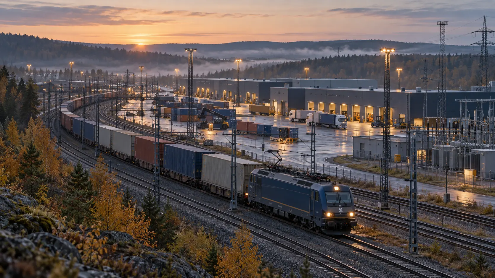

El
Driver nät, styrsystem, terminaler och elektrifierad trafik.
Behöver: fungerande anläggningar, reservdelar och bränsle till reservkraft.
En geopolitisk analys av 2026 och dess betydelse för Europa, Norden och Sveriges säkerhet. Preliminär lägesbild till och med 6 oktober, med öppna källor och tydligt redovisade bedömningar.
Under 2026 har Europas säkerhetsansvar blivit mer konkret: ökade åtaganden inom Nato ska omsättas i Ukrainastöd, skyddade transportleder och tillgängliga förband. Samtidigt visar årets ärenden hur inhämtning, påverkan och våldsplanering kan nå svenska myndigheter, företag och enskilda. Sveriges förmåga att hantera utvecklingen beror på att politiska beslut, militärt försvar och civila försörjningsflöden fungerar tillsammans.
Utvecklingen fram till den 6 oktober visar en skillnad mellan växande åtaganden och den förmåga som redan går att använda. Årets början präglades av omstridda internationella åtaganden och varningar om rysk förmågeuppbyggnad. Under våren och sommaren följde industri-, försvars- och beredskapsbeslut, medan höstens offentliga attribueringar och svenska säkerhetsärenden har tydliggjort skyddsbehovet kring genomförandet. Större anslag kan bygga framtida styrka, men ger inte omedelbart fler reparatörer, tillgängliga transportvägar eller alternativa leverantörer. Sverige behöver därför kunna hantera fortsatt utsatthet samtidigt som förmågan byggs upp. Årets återstående månader kan förändra denna preliminära bild.
Läs bedömningen först och pröva den mot underlaget. Varje huvudkapitel börjar med en fråga och ett svar med sannolikhetsgrad. Därefter följer sammanhang, analys och källbelagda händelser. Avslutningen beskriver betydelsen för Sverige och leder vidare till nästa kapitel.
Grafiken visas direkt. Samlade fall, referenser och bedömningsgrunder kan öppnas där de hör till. Efter analyskapitlen finns kartan och fallförteckningen; metodavsnittet förklarar sannolikhetsgrader, källvärdering och rapportens tidsgräns.
Bedömningsfråga
Kommer Europa under 2027 att kunna bära sitt ökade säkerhetsansvar utan fortsatt tillgång till centrala amerikanska militära stödförmågor?
Tveksam <20 %Europeisk upprustning väntas stärka förmågan, men bedöms inte under 2027 räcka för att ersätta centrala amerikanska bidrag till ett uthålligt försvar av Europa. Ett större ansvar inom Nato är därför mer genomförbart än operativ självständighet. Bedömningen gäller tillgång till nödvändiga förmågor, inte att USA säkert kommer att lämna dem tillgängliga i varje kris.
Årets transatlantiska utveckling rymmer både friktion och fortsatt samarbete. Januari visade hur amerikanska prioriteringar och påtryckningar kunde belasta relationen till allierade. Under våren och sommaren blev det europeiska gensvaret tydligare genom försvarssamarbeten och åtaganden i Nato. September förde samtidigt nya Ukrainaförhandlingar, ett Grönlandsavtal och skärpt politisk konkurrens i flera europeiska länder. För Sverige handlar utvecklingen om vilken säkerhet alliansen kan leverera och hur länge åtagandena håller.
Kapitlet följer först ansvarsfördelningen mellan USA och Europa, därefter de nationella politiska villkor som kan påverka samarbetet. Ukrainaförhandlingarna prövar Europas inflytande över den egna säkerheten. Kina och BRICS belyser den bredare konkurrensen om regler, ekonomi och internationell legitimitet. Dessa processer överlappar, men ska inte beskrivas som en enda samordnad utveckling.
USA:s nationella försvarsstrategi för 2026 (U.S. Department of War, 2026) anger fyra huvudlinjer: försvar av hemlandet, avskräckning av Kina, större ansvar för allierade och partner samt en starkare försvarsindustri. I USA:s försvarsstrategi 2026 lyfts också dess geografi: dokumentet vill säkra amerikansk militär och kommersiell tillgång till strategisk terräng, särskilt Grönland och Panamakanalen. Strategin anger prioriteringar; faktiska resursförflyttningar behöver följas separat. För Europa är den tydliga förändringen att Washington lägger större vikt vid prioriteringar nära det egna territoriet och förväntar sig att allierade stärker sin egen förmåga.
Årets början visar hur prioriteringarna också omsattes i handling och påtryckningar. Den 3 januari grep amerikanska styrkor Nicolás Maduro och hans hustru i Caracas. Den första rapporteringen om Venezuelaoperationen kan nu läsas tillsammans med USA:s justitiedepartements senare redogörelse, som bekräftar tid och plats. Gripandet är ett konkret exempel på amerikansk militär maktanvändning i det västra halvklotet; det avgör inte frågan om operationens folkrättsliga grund.
Senare i januari prövades också relationen till allierade. Tullhoten i konflikten om Grönland följdes av besked om att de planerade extra tullarna inte skulle införas. Europeiska rådets ordförande António Costa välkomnade beskedet den 23 januari, men betonade att Danmark och Grönland själva bestämmer över sin framtid. Episoden visar hur handel och territoriella anspråk kunde belasta alliansens politiska förtroende även när det akuta tullhotet drogs tillbaka. Septemberavtalet om Grönland behöver förstås mot den bakgrunden.
Ankaradeklarationen (Nato, 2026) bekräftar artikel 5 och beskriver det transatlantiska bandet som bestående. Samtidigt uppger Nato att europeiska allierade och Kanada ökade investeringarna i centrala försvarskrav med mer än 139 miljarder dollar under 2025. De åtog sig att finansiera huvuddelen av stödet till Ukraina och utlovade 70 miljarder euro i militär materiel, stöd och utbildning för 2026, med minst motsvarande nivå 2027. Åtagandena behöver följas mot leveranser och kvarstående förmågebrister.
Skillnaden mellan ökade utgifter och operativ förmåga framgår av den europeiska försvarsutvecklingen. IISS beskriver både en snabb ökning av europeiska försvarsutgifter och kvarstående förmågegap; IISS konstaterar i sin slutsats (International Institute for Strategic Studies, 2026) att en starkare europeisk försvarspelare inom Nato fortfarande är ett pågående arbete. För Sverige är det avgörande vilka operationer den nya kapaciteten faktiskt kan stödja. Det skapar en övergångsrisk: europeiska regeringar kan ta på sig större uppgifter innan de har de stödfunktioner som uppgifterna kräver. Om den amerikanska tillgängligheten samtidigt minskar kan luckan bli större trots ökade europeiska anslag. Ett större ansvar är därför inte liktydigt med större handlingsfrihet. För Sverige blir samordningen mellan nationell upprustning, allierad planering och tillgång till kvarvarande amerikanska förmågor avgörande för vad som faktiskt kan genomföras i en kris.
Det europeiska gensvaret omfattar även kärnvapenavskräckning. I Macrons besked den 2 mars ingick en ökning av Frankrikes kärnvapenarsenal och fördjupade strategiska dialoger med europeiska partner, däribland Sverige. Det franska anförandet behåller beslutet om användning hos Frankrike. Den 23 april möttes Frankrikes och Sveriges första gemensamma kärnvapenstyrgrupp i Paris; Élyséepalatset offentliggjorde mötet den 27 april. Det är ett konkret steg i samarbetet, men inte ett besked om att Sverige fått egen kärnvapenförmåga eller att det amerikanska bidraget till Natos avskräckning ersatts.
Europas större säkerhetsansvar förutsätter att nationella regeringar kan hålla ihop försvarssatsningar, stöd till Ukraina och samarbete mellan allierade över flera år. Därför har utvecklingen för AfD i Tyskland, Rassemblement national (RN) i Frankrike och Reform UK i Storbritannien betydelse även för Sverige. Partiernas program, maktpositioner och relationer till Ryssland skiljer sig åt. Inflytandet behöver därför följas genom deras förslag och beslut, finansiering och institutionella begränsningar.
För svensk planering gäller tre möjliga följder: svårare finansiering av Ukrainastödet, fördröjda gemensamma beslut och minskad tillit kring känslig försvarsinformation. Genomgången nedan prövar vilka utvecklingar i respektive land som kan påverka dessa förutsättningar.
Läs från politisk väg till berörd förmåga. Rutorna visar möjliga samband, inte prognoser om valvinnare.
Politisk vilja behöver följas tillsammans med militär kapacitet och fungerande transport- och försörjningskedjor.
AfD:s framgång i Sachsen-Anhalt den 6 september förde frågan om partiets regeringsinflytande närmare den praktiska försvarsplaneringen. Partiet fick 43,8 procent av rösterna och 39 av 83 mandat, vilket gav en stark position men ingen egen majoritet. Delstatens valmyndighet publicerade det slutliga resultatet den 22 september. Ett delstatsresultat förändrar förutsättningarna för regionalt inflytande; det ger inte i sig kontroll över förbundsregeringens utrikes- och försvarspolitik (Statistisches Landesamt Sachsen-Anhalt, 2026).
Debatten fick en konkret säkerhetsdimension när reservistförbundet ville begränsa tillgången till Operationsplan Deutschland, OPLAN DEU, vid ett möjligt AfD-styre i delstaten. N-tv och AFP återgav den 14–15 september förbundsordföranden Bastian Ernsts oro för att känsliga uppgifter skulle kunna nå Ryssland. Varningen gäller hanteringen av försvarsinformation; någon överföring till Ryssland fastställs inte i uppgifterna. För Sverige är frågan relevant eftersom skyddad planering och fungerande civil samverkan behövs för allierade förstärkningar genom Europa (N-tv & AFP, 2026). Om uppgifter begränsas av säkerhetsskäl kan även de civila aktörer som ska stödja en förstärkning få svårare att planera sin del. Här uppstår en avvägning mellan sekretess och genomförande: känsliga detaljer måste skyddas samtidigt som ansvariga för transporter, mottagande och försörjning behöver tillräcklig information. En politisk förtroendekris kan på så sätt påverka förstärkningens tempo utan att ett enda dokument har läckt eller ett formellt alliansåtagande ändrats.
Partiets politiska linje kan också följas i konkreta initiativ. AfD ville stoppa överlåtelsen av ett gaseldat kraftverk i Lubmin till Ukraina. Förbundsdagen behandlade förslaget den 22 maj och hänvisade det till utskott. Motionen visar hur stöd till Ukraina kan ifrågasättas genom parlamentariska verktyg. Den visar inte att partiet lyckades stoppa överlåtelsen (Deutscher Bundestag, 2026).
Även den rättsliga beskrivningen behöver vara noggrann. Förvaltningsdomstolen i Köln beslutade den 26 februari att BfV tills vidare inte fick klassificera och behandla den federala AfD-organisationen som säkerställt högerextremistisk i väntan på prövning i första instans. Beslutet gällde ett interimistiskt förfarande; det avgjorde inte hela huvudmålet och ska inte blandas samman med bedömningar av enskilda delstatsorganisationer. Säkerhetspolitisk analys av AfD behöver därför hålla isär partiets politiska förslag, de rättsliga processerna och misstankar om enskilda företrädare (Verwaltungsgericht Köln, 2026).
RN:s starka opinionsläge inför presidentvalet 2027 gör den franska utvecklingen till en säkerhetspolitisk fråga redan under 2026. I Ifop-Fiducials mätning den 24–25 augusti fick Marine Le Pen 33–35 procent i de testade alternativen för första valomgången. Resultatet gäller hypotetiska kandidatfält i första omgången och anger ingen sannolikhet för valseger (Ifop-Fiducial, 2026).
Le Pens rättsprocess har samtidigt ändrat förutsättningarna sedan årets början. Paris appellationsdomstol fastställde den 7 juli hennes skuld i ärendet om EU-parlamentsmedel men kortade den ovillkorliga delen av valbarhetsförbudet till 15 månader, som då redan hade löpt ut. Domen omfattade även ett års ovillkorligt fängelse, med möjlighet till elektronisk övervakning. Samma kväll meddelade hon att hon avsåg att kandidera 2027 och gå vidare till kassationsdomstolen. Rättsprocessen påverkar därmed både kandidatfrågan och villkoren för valkampanjen (Marchal, 2026; LCP, 2026).
RN:s äldre ryska finansiering är ett separat förhållande. Nationalförsamlingens utfrågning av Le Pen den 24 maj 2023 behandlade partiets ryska lån på omkring nio miljoner euro från 2014. Historiken motiverar granskning av finansiering, beroenden och möjliga intressekonflikter. Den räcker inte för att fastställa att ett framtida franskt regeringsbeslut styrs från Moskva (Assemblée nationale, 2023).
Frankrikes kärnvapen gör ett politiskt skifte säkerhetspolitiskt betydelsefullt även om arsenalen förblir oförändrad. Nato beskriver de franska och brittiska självständiga kärnvapenstyrkorna som bidrag till alliansens säkerhet: en motståndare måste förhålla sig till flera nationella beslutsfattare. Frankrike står samtidigt utanför Natos kärnvapenplaneringsgrupp. Ett franskt kursbyte skulle därför främst kunna påverka Frankrikes eget bidrag och samverkan med partner; det skulle inte ge Paris kontroll över USA:s eller Storbritanniens kärnvapen. För Sverige gäller frågan hur trovärdigt det är att franska beslutsfattare ser ett allvarligt hot mot Norden som ett hot mot Frankrikes egna vitala intressen (Nato, u.å.).
Det finns en faktisk politisk skiljelinje att utgå från. I RN:s uttalande den 2 mars kritiserade Marine Le Pen och Jordan Bardella den föreslagna spridningen av franska kärnvapenstyrkor till europeiska partner och avvisade att avskräckningen skulle användas för europeisk integration. De accepterade samtidigt gemensamma övningar och ömsesidigt fördelaktigt industrisamarbete. Kravet på fransk beslutanderätt delar partiet med Macron; skillnaden gäller framför allt samarbetets omfattning och villkor. Ett RN-lett Frankrike behöver alltså inte avveckla sin avskräckning eller lämna Nato för att det europeiska samarbetet ska förändras. Färre gemensamma övningar, mer villkorad medverkan eller mindre beredskap att placera styrkor hos partner skulle kunna försvaga den europeiska dimension som Sverige börjat knyta sig till (Rassemblement national, 2026).
Ett regeringsskifte och ett presidentskifte skulle påverka olika delar av detta. Macron har behållit beslutet om kärnvapenanvändning och tolkningen av vitala intressen hos presidenten. En RN-ledd regering under en president från ett annat läger skulle ändå kunna påverka resurser och genomförande inom den franska konstitutionens ansvarsfördelning, där regeringen leder politiken och premiärministern ansvarar för det nationella försvaret. Om RN även vinner presidentposten förändras däremot vem som tolkar de vitala intressena och fattar det yttersta beslutet. En snävare tolkning skulle kunna få Moskva att bedöma det franska svaret på ett angrepp mot en europeisk partner som mindre troligt. En fortsatt bred europeisk inriktning skulle kunna bevara avskräckningens verkan. För Sverige betyder det att ett franskt samarbete kan vara ett värdefullt tillskott men inte behandlas som en ovillkorlig ersättning för övrig allierad avskräckning. Valresultatet avgör inte ensamt utfallet; det viktiga är vilka intressen den nya ledningen säger sig vara beredd att försvara och vilket samarbete den upprätthåller.
Reform UK:s inflytande bör bedömas både genom val och genom hur partiet förändrar andra partiers prioriteringar. YouGovs mätning den 27–28 september gav Reform UK 25 procent, Labour 24 och de konservativa 19. Mätningen visade ett jämnt opinionsläge mellan Reform UK och Labour. Fördelningen av mandat beror också på resultaten i de enskilda valkretsarna. För säkerhetsanalysen blir partiernas konkreta utrikes- och försvarspolitiska beslut mer vägledande än en ensam opinionssiffra (YouGov, 2026).
Granskningen av utländsk finansiering kring Reform UK i september visade en annan möjlig sårbarhet. Efter Channel 4 News och Verbatims dolda kameragranskning lämnade policychefen James Orr och rådgivaren Dan Jukes sina uppdrag i väntan på partiets interna utredning. ITV redovisade den 4 september både anklagelserna och Farages bestridande av lagbrott. Ärendet gällde bland annat utländsk betalning för opinionsmätningar. Granskningen belägger inte i sig rysk finansiering eller att partiets politik beställts av en främmande stat (ITV News, 2026).
Ett rättsligt fastställt exempel finns i ett äldre ärende: Nathan Gill dömdes den 21 november 2025 till tio och ett halvt års fängelse för åtta mutbrott. Domstolen beskrev hur han under 2018–2019 som EU-parlamentariker tog emot betalning genom Oleg Voloshyn för uttalanden som gynnade Viktor Medvedchuks intressen. Gill blev senare, 2021, ledare för Reform UK i Wales. Fallet visar hur en folkvald kan köpas som påverkanskanal. Domen gäller Gills gärningar och kan inte användas som bevis för att hela Reform UK är ryskt styrt (Central Criminal Court, 2025).
För Sverige gäller den brittiska utvecklingen uthålligheten i Ukrainastöd, Natosamarbete och bilaterala åtaganden. Opinionsläget ger ingen motsvarande omedelbar beslutspunkt under 2027 som det franska presidentvalet, men konkurrensen kan påverka sittande regerings prioriteringar. Mer villkorat stöd kan öka Sveriges del av gemensamma insatser. Om budgetar och leveranser består kan retoriken däremot få begränsad operativ betydelse. Underlaget visar inte att Storbritannien övergett sina alliansåtaganden till följd av Reform UK:s opinionsstöd.
Inhemska drivkrafter som migration, levnadskostnader och misstro mot etablerade partier samspelar med ett informationslandskap där externa aktörer försöker vinna inflytande. BfV:s genomgång av rysk spioneri-, sabotage- och desinformationsverksamhet beskriver bland annat kampanjen Storm-1516. Ett dokumenterat påverkansförsök visar en aktörs verksamhet; dess effekt på röster, mandat och senare beslut måste undersökas separat (Bundesamt für Verfassungsschutz, 2025).
Även amerikansk politik kan belasta den europeiska sammanhållningen. Europavsnittet i USA:s nationella säkerhetsstrategi 2025 välkomnar inflytandet för vad dokumentet kallar patriotiska europeiska partier och anger att motstånd mot Europas nuvarande kurs ska främjas inom europeiska länder. Det ger belägg för en amerikansk politisk inriktning. Den kan förstärka vissa konflikter inom Europa, samtidigt som USA:s och Rysslands intressen och metoder skiljer sig åt. Överlappande intressen räcker inte för att fastställa en gemensamt styrd operation (The White House, 2025).
Plattformarnas betydelse behöver bedömas med samma precision. Sky News undersökning av nio nya X-konton, publicerad i november 2025, fann att rekommendationsflödena förstärkte högerorienterat och extremistiskt innehåll. Undersökningen mätte exponering för innehåll och omfattade ett avgränsat experiment. Den fastställde inte hur många väljare som ändrade uppfattning eller vilka valresultat algoritmen orsakade (Sky News Data and Forensics Unit, 2025).
Europas politiska sårbarhet ligger i att militära förmågor och gemensamma åtaganden kan bestå formellt medan deras användning blir mer osäker. I Tyskland gäller det bland annat samspelet mellan informationsskydd och civil försvarsplanering, i Frankrike den politiska räckvidden för en självständig avskräckning och i Storbritannien uthålligheten i stöd och samarbete. Fördröjningar och nya villkor kan ge en motståndare större utrymme att sätta press på enskilda länder. Sverige behöver därför kunna bedöma både vad partnerna har och under vilka politiska förutsättningar resurserna kan användas.
Den 5 september reste Donald Trumps sändebud Steve Witkoff och Jared Kushner till Moskva för samtal med Vladimir Putin. Mötet varade omkring tre timmar. Dagen därpå fortsatte de till Kyiv, där de träffade Volodymyr Zelenskyj och även deltog i samtal med företrädare för Frankrike, Storbritannien och Tyskland. Förhandlingsspåret omfattade därmed både direktkontakter mellan Washington och Moskva och konsultationer med Ukraina och europeiska partner (Rodkiewicz et al., 2026).
Diskussionen om ryska ”röda linjer” föregick septemberbesöket. I en intervju som Anadolu rapporterade om den 22 februari sade Witkoff att Putin varit tydlig med sina röda linjer och motiv, och försvarade kontakterna som nödvändiga för att förstå motpartens krav (Eruygur, 2026). Uttalandet beskriver den amerikanske förhandlarens syn på Putin. Det gör inte Moskvas krav till internationellt erkända gränser för Ukrainas eller Europas handlingsfrihet.
Efter mötena i september återstod motsättningarna om territorium och säkerhetsgarantier. Zelenskyj välkomnade att förhandlingarna återupptagits, men framhöll att territoriella frågor måste avgöras på ledarnivå och att Ukraina behöver en stark egen försvarsmakt. Hans kansli redovisade också en separat samtalsrunda med de europeiska rådgivarna (Ukrainas presidentkansli, 2026). Det brittiska parlamentsbibliotekets genomgång den 15 september konstaterade att de offentliga ryska uttalandena inte visade någon beredskap att kompromissa om tidigare krav. Det positiva språkbruket efter ett möte behöver därför skiljas från ändrade förhandlingspositioner (Mills, 2026). En uppgörelse som begränsar Ukrainas försvar utan att ge fungerande skydd mot ett nytt angrepp skulle kunna minska striderna på kort sikt men öka Rysslands framtida handlingsutrymme. Om Ukraina däremot behåller förmågan att försvara sig och stödet kan fortsätta även efter en vapenvila blir ett nytt angrepp mer kostsamt. För Sverige innebär detta att fredens säkerhetsvillkor är viktigare för den långsiktiga riskbilden än själva beskedet att förhandlingar pågår.
De europeiska reaktionerna förenade stöd till diplomati med krav på hur en fred ska utformas. Vid FN:s säkerhetsråd den 23 september betonade Europeiska rådets ordförande António Costa Ukrainas suveränitet, territoriella integritet, rätt att välja sin framtid och behov av trovärdiga säkerhetsgarantier (Costa, 2026). Storbritanniens utrikesminister avvisade samma dag gränsändringar med våld och förespråkade vapenvila, fortsatt stöd till Ukraina och ökat ekonomiskt tryck på Ryssland (Foreign, Commonwealth & Development Office, 2026).
Den 22 september förlängde EU sanktionslistningarna mot personer och organisationer som undergräver Ukrainas territoriella integritet med tre år, till den 22 september 2029. Det var en konkret åtgärd för fortsatt tryck, parallellt med förhandlingskontakterna. Beslutet gällde dessa listningar och ska inte beskrivas som en förlängning av samtliga Rysslandssanktioner (Europeiska unionens råd, 2026).
Världens hållning kan inte sammanfattas som ett enhetligt gensvar. Redan den 24 februari antog FN:s generalförsamling resolutionen Support for lasting peace in Ukraine med 107 röster för, 12 emot och 51 nedlagda. Sverige röstade för; USA, Kina och Indien avstod. Omröstningen föregick septembermötet och visar ländernas ställningstaganden till just den resolutionen, inte deras reaktion på sändebudens resa eller stöd för ryska territoriella krav (FN:s generalförsamling, 2026).
Stormaktskonkurrens handlar också om hur stater uppfattas som partner. Opinionsmätningen om Kina och USA visar att Kina bedömdes mer positivt än USA i 25 av 36 undersökta länder. Pews originalrapport (Pew Research Center, 2026a) omfattade 42 151 personer och genomfördes 8 februari–13 maj 2026. Separat visar Pew Research Centers rapport om USA:s roll (2026b) att endast åtta procent av de svenska svarande anser att USA tar hänsyn till länder som Sveriges intressen.
Skillnaden i anseende kan få betydelse när europeiska länder söker stöd för sanktioner, exportkontroller och gemensamma regler. Regeringar som har andra ekonomiska intressen eller vars befolkningar ser Kina som en mer attraktiv partner kan vara mindre mottagliga för västliga förslag. Opinionsmätningen fastställer inte sådana beslut, men den visar varför Sverige inte kan förutsätta att den egna beskrivningen av hot och regler får samma gehör utanför Europa. Ett säkerhetspolitiskt budskap behöver förankras i konkreta gemensamma intressen, exempelvis säkra handelsflöden och respekt för suveränitet.
BRICS betalningssamarbete tar sin utgångspunkt i New Delhi-deklarationen. Den förespråkar större inflytande för tillväxt- och utvecklingsekonomier i FN, IMF, Världsbanken och WTO, beskriver multipolaritet som ett mål och motsätter sig ensidiga sanktioner som inte beslutats av FN:s säkerhetsråd. Deklarationen ger BRICS arbetsgrupp för betalningar i uppdrag att fortsätta söka praktiska lösningar för gränsöverskridande betalningar; den nämner även diskussioner om avräkning och investeringar i medlemsländernas egna valutor.
Deklarationen går längre än handel och finans: den tar upp BRICS-satellitkonstellationen för fjärranalys och fortsatta cybersäkerhetsövningar inom finanssektorn. Dessa områden är fortsatt samarbete och utveckling; deklarationen fastställer ingen gemensam operativ förmåga eller valuta. Uppgifterna om BRICS betalningssamarbete skiljer också mellan lokala valutor och en gemensam valuta. BRICS bör följas som ett forum för reformkrav och praktiskt samarbete, med skilda nationella intressen. Om alternativa betalningsvägar blir användbara kan de minska vissa länders exponering mot västliga finansiella verktyg och göra gemensamt ekonomiskt tryck svårare att upprätthålla. Det följer däremot inte att handel i lokala valutor i sig är sanktionskringgående. För Sverige är skiljelinjen den faktiska transaktionen och dess mottagare. BRICS utveckling kan därför förändra villkoren för ekonomisk påverkan även utan en gemensam valuta eller ett sammanhållet militärt block.
Den internationella konkurrensen utspelar sig också mellan politiska modeller. V-Dem Democracy Report 2026 återger rapportens klassificering vid utgången av 2025: 92 autokratier och 87 demokratier, med 74 procent av världens befolkning i autokratier. V-Dems rapport och metod (Nord et al., 2026) visar att detta är en klassificering av styrelseskick, inte en karta över vilka stater som samarbetar eller står mot varandra. Den ger ändå en viktig bakgrund till att legitimitet, politiska rättigheter och innebörden av en regelbaserad ordning har blivit omstridda frågor. När demokratiska och auktoritära system samarbetar i samma handels- och försörjningskedjor blir motsättningen mer svårhanterlig än en enkel blockindelning antyder. Sverige kan behöva teknik eller material från ett land vars säkerhetspolitik man samtidigt motverkar. Följden är att utrikespolitik, exportkontroll och företagens inköp behöver bedömas tillsammans. Politisk kritik förändrar inte automatiskt ett materiellt beroende; handlingsutrymmet växer först när beroendet kan hanteras eller ersättas.
Det finns samtidigt skäl att undvika en alltför mörk slutsats. Den ökade europeiska produktionen och nya samarbeten kan ge större handlingsfrihet även om amerikanska stödförmågor fortfarande behövs. Ett land behöver inte vara självständigt i varje del för att kunna genomföra fler uppgifter än tidigare. Politiskt inflytande för AfD, RN eller Reform UK innebär inte heller automatiskt att allianssamarbetet bryts. Förmågeutveckling och faktiska beslut kan därför begränsa följderna av den politiska osäkerheten. Den avgörande skillnaden är mellan att kunna göra mer inom alliansen och att kunna bära dess centrala uppgifter utan amerikanskt stöd.
Sverige kan få ett större ansvar samtidigt som tillgången till stöd blir mindre förutsägbar. Frankrikes presidentval är en särskild prövning; AfD:s delstatsinflytande och Reform UK:s opinionsstöd verkar genom andra institutionella vägar. För svensk planering behöver två risker hållas isär: att en nödvändig förmåga saknas och att en partner som har förmågan inte medverkar i tid. Fler europeiska förband kan minska den första risken utan att undanröja den andra. Förändringar i fransk kärnvapenpolitik får därför betydelse genom vad Frankrike faktiskt erbjuder, vilka villkor som ställs och hur detta samordnas med allierad planering. Ett valresultat anger inte ensamt hur avskräckningen förändras. Under 2027 behöver politiska besked följas fram till beslut, övningar och tillgängliga förmågor.
Bärande skäl: IISS beskriver kvarstående förmågegap samtidigt som europeiska investeringar och produktion växer. USA:s prioriteringar och Natos åtaganden ökar trycket på Europa att ta ansvar, men politisk vilja och större anslag ersätter inte omedelbart operativa stödfunktioner. Frankrikes självständiga avskräckning och nya partnerskap ger fler möjligheter utan att i sig ersätta hela det amerikanska bidraget. Mot bedömningen talar snabbare europeiska leveranser, effektivare gemensam användning och möjligheten att lösa vissa uppgifter med andra metoder. Det gör framsteg möjliga utan att belägga oberoende under just 2027.
Omprövning: Bedömningen skulle stärkas i riktning mot ett ja om europeiska förmågor driftsätts, samövas och visar att de kan bära centrala uppgifter utan amerikanskt stöd. Kortare ledtider och en avgränsning av vilka uppgifter Europa ska klara kan också ändra slutsatsen. En amerikansk tillbakadragning visar däremot bara att stödet minskar, inte att Europa kan ersätta det. Graden avser möjligheten till operativ självständighet under 2027 och är en kvalitativ bedömning, inte ett beräknat mått.
Bedömningsfråga
Kommer krig och sabotage under 2027 att tvinga europeiska länder att omleda eller återställa civila energi- och transportflöden?
Sannolik >80 %Återkommande behov av omledning och återställning bedöms som sannolikt. Kriget, dokumenterade sabotage och förbindelsernas koncentration gör att skyddet av civila flöden förblir en praktisk förutsättning för Ukrainastöd och allierad förstärkning. Bedömningen innebär inte att störningarna blir större än 2026 eller att stödet kommer att upphöra.
Under 2026 har kriget i Ukraina fortsatt kräva europeisk uthållighet, samtidigt som angrepp och inhämtning berört de civila kedjor som möjliggör stödet. Årets början gav både varningar om rysk militär förmåga och konkreta avbrott i europeisk infrastruktur. Under sommaren följde industrileveranser och nya samverkansåtgärder. Höstens besked om Leipzig och Milrem gjorde statlig attribuering och gemensamma motåtgärder till tydliga delar av Europas svar.
Kapitlet börjar med krigets uthållighet och de transport- och energiförbindelser som påverkar Sverige. Därefter följer inhämtning, sabotage och europeiska motåtgärder. Fallen används för att pröva angreppssätt och konsekvenser. Fler offentliggjorda ärenden kan spegla både fler angrepp och bättre upptäckt eller större öppenhet; urvalet räcker inte för att mäta förändringen i angreppsfrekvens.
Krigets förlopp och Europas stöd behöver läsas tillsammans med Rysslands möjlighet att bygga ny förmåga. I MUST:s årsöversikt för 2025, publicerad i februari 2026, bedöms Ryssland redan kunna genomföra ett begränsat väpnat angrepp i Sveriges närområde och på tre till fem års sikt kunna angripa större militära enheter eller ta avgränsade områden. Det är förmågebedömningar, inte ett besked om ett beslutat angrepp. MUST framhåller också att ett vapenstillestånd på ryska villkor skulle kunna frigöra resurser för styrkeuppbyggnad, medan ekonomiska påfrestningar och sanktioner hämmar takten.
Estlands utrikesunderrättelsetjänsts rapport för 2026 uppskattar den ryska produktionen under 2025 till omkring sju miljoner artillerigranater, granatkastarprojektiler och raketer i de kalibrar rapporten räknar. Det är myndighetens uppskattning av flera ammunitionstyper, inte sju miljoner haubitsgranater. Rapporten beskriver dessutom import från Iran och Nordkorea samt försök att anskaffa västlig industriutrustning via mellanhänder. Även utländska komponenter i ryska vapen, dokumenterade i Ukrainas databas War & Sanctions, belyser en annan del av samma försörjningsproblem. Att en tillverkares komponent identifieras i ett vapen belägger inte i sig att tillverkaren medvetet medverkat till sanktionskringgående.
Sveriges stöd till Ukraina har under 2026 också utvecklats till mer långsiktiga industriella och militära relationer. Vid mötet i Uppsala den 28 maj undertecknade länderna en gemensam förklaring om förstärkt säkerhets- och försvarssamarbete. Ukraina tillkännagav samtidigt avsikten att köpa 20 Gripen E/F, vilket är ett avsiktssteg och inte i sig ett färdigställt leveransavtal. Den svenska regeringen beskrev också en planerad donation av äldre Gripenflygplan; den politiska inriktningen och den faktiska leveranstakten måste därför följas var för sig. Händelsen finns sammanfattad i besöket och försvarssamarbetet i Uppsala och i regeringens besked om Gripen (Regeringskansliet, 2026; Reuters, 2026).
Det långsiktiga stödet till Ukraina binder samman svensk försvarsplanering med utbildning, underhåll och industrins kapacitet. Samma leverantörer och kompetenser kan behövas både för Ukrainas behov och för svensk upprustning. Om kapaciteten inte byggs ut i takt med åtagandena kan leveranser konkurrera om personal, komponenter och verkstadstid. En levererad plattform ger uthållig förmåga först när besättningar, ammunition, underhåll och reservdelar finns tillgängliga.
Ett konkret steg från industriell uppbyggnad till leverans kom i juli. Rheinmetalls nya fabrik i Unterlüß skickade sina första 155-millimetersgranater till Ukraina, enligt bolagets besked den 14 juli. Mer än hälften av den redovisade beställningen hade levererats och återstoden skulle skickas före årets slut. Leveransen visar hur ny industrikapacitet börjar omsättas i stöd. Den fortsatta takten beror även på råvaror, sprängämnen och transporter.
Den långsiktiga säkerheten omfattar också Ukrainas förmåga att återställa samhället. I den gemensamma skade- och behovsbedömningen RDNA5 den 23 februari uppskattade Ukraina, Världsbanken, EU-kommissionen och FN återhämtnings- och återuppbyggnadsbehoven till nästan 588 miljarder dollar över tio år, räknat på skador till och med den 31 december 2025. Summan är ett bedömt behov, inte beslutad finansiering eller en kostnad enbart för 2026. Återställning av el, transporter, bostäder och samhällstjänster påverkar den ekonomiska uthålligheten och möjligheten att bära ett långvarigt försvar. Det kopplar stödet under kriget till Europas ansvar efter ett eventuellt vapenstillestånd.
Återuppbyggnad kan samtidigt minska sårbarheten för nya angrepp genom bättre reservförsörjning och snabbare reparation. Om samhällstjänsterna fortsätter att falla bort kan även ett militärt försvar belastas av ekonomiska förluster och civila behov. För Europas del blir gränsen mellan militärt stöd och återuppbyggnad därför mindre tydlig: båda bidrar till Ukrainas möjlighet att stå emot påtryckningar efter en eventuell vapenvila.
Östersjön är både ett militärt operationsområde och en tät korridor för handel, energi och data. NATO:s Baltic Sentry, som inleddes 2025 efter skador på kritisk undervattensinfrastruktur, innebär ökad allierad närvaro och användning av bland annat fartyg, patrullflyg och marina drönare. Initiativet stärker övervakningen; ansvar för enskilda kabelskador avgörs i respektive utredning (NATO, 2025).
Den ekonomiska och civila dimensionen blir tydlig i den nordiska strategin för transportsystemets beredskap. Den behandlar scenarier där sjötrafik genom Östersjön och de danska sunden begränsas eller störs, och behovet av nordisk samordning kring hamnar, landförbindelser och isbrytning. Strategin för nordisk transportberedskap pekar på den praktiska följden för Sverige: hamnar och landkorridorer kan behöva bära större transitflöden om vissa sjövägar blir svårare att använda. Det är ett planeringsscenario, inte en prognos om att en blockad är nära förestående (Nordic Transport Preparedness Cooperation, 2026).
Se kartan över de fyra prioriterade transportkorridorerna i kapitlet om svensk förmåga.
En separat energianalys från Nordic Energy Research beskriver hur sammankopplingen mellan nordiska och baltiska el- och energisystem både ger motståndskraft och skapar ömsesidiga beroenden. Rapporten pekar särskilt på den täta koncentrationen av gränsöverskridande undervattensinfrastruktur i Östersjön och på att störningar kan få följder över nationsgränser. Den officiella rapporten Energy Security in the Nordics visar varför skydd och reservlösningar behöver planeras regionalt (Rauhala & Fager-Pintilä, 2026).
Sammankopplingen ger fler alternativ, men en reservförbindelse kan sakna kapacitet för det ökade flödet. Vid samtidiga skador avgörs följderna av hur mycket som kan ledas om och vilka användare som får företräde.
Ett konkret svenskt ingripande under året var bordningen av Caffa den 6 mars utanför Trelleborg. Fartyget togs senare i beslag inom internationell rättslig hjälp. Domstolsprövningen om överlämnande till Ukraina gick vidare från tingsrätt till hovrätt. Efter Högsta domstolens besked, rapporterat den 6 augusti, stod beslutet fast att fartyget fick lämnas ut. Det är ett beslut som tillåter överlämnande, inte belägg för att det fysiska överlämnandet genomförts. Fallet visar hur sjösäkerhetskontroll kan leda vidare till rättsligt samarbete om misstänkt transport av stulet ukrainskt spannmål. Ingripandet är inte belägg för att Caffa genomförde sabotage.
Sårbarheten finns också på land. Kabelkapningen i Ylöjärvi den 19 juni stoppade tåg på sträckan Tammerfors–Seinäjoki under flera timmar. Den 26 juni kapades telekablar i Malmi i Helsingfors. Finlands centralkriminalpolis bekräftade den 30 juni att båda fallen var avsiktliga och utredde grov skadegörelse; i Malmi även störning av telekommunikation. Myndigheten angav ingen beställare eller motivbild. För svensk beredskap visar fallen hur markbundna kommunikationsförbindelser kan påverka både samhällsservice och nordiska transportflöden.
Arktis ger ett särskilt tydligt exempel på hur amerikansk omprioritering och europeiskt alliansarbete möts. Ett försvarsavtal mellan USA, Danmark och Grönland undertecknades den 22 september. Försvarsavtalet om Grönland pekar på de två planerade försvarsområdena i Narsarsuaq och Mestersvig; i Statsministeriets redogörelse (Statsministeriet, 2026) framhålls samtidigt suveränitet, grönländskt självbestämmande och att avtalet är förankrat i Nato. Tillsammans med USA:s uttalade intresse av tillgång till strategisk terräng i Arktis visar detta att omprioriteringen inte enkelt kan beskrivas som ett amerikanskt tillbakadragande från Europa. Den innebär också att den arktiska dimensionen får större betydelse i förhandlingar om alliansens ansvar, närvaro och kontroll.
Arktis säkerhet handlar om mer än territoriell kontroll. Avstånd, väder, mörker, begränsad infrastruktur och beroende av rymdbaserad övervakning påverkar möjligheten att upptäcka, förstärka och försörja förband. I februari lanserade NATO Arctic Sentry som en allierad militär aktivitet i norr. I september genomfördes den danskledda övningen Arctic Shield på Grönland: det danska försvaret uppgav att över 400 militärer från omkring tio NATO-länder tränade i arktiska förhållanden. Även svenska hemvärnssoldater deltog; det svenska deltagandet i övningen visar hur nordiskt samarbete omsätts i praktisk träning. Övningen är ett exempel på samverkan och operativ erfarenhet, inte ensam ett mått på varaktig förstärkningsförmåga (Danish Defence, 2026; NATO, 2026).
Norra Sveriges roll i allierad förstärkning gör civila flaskhalsar säkerhetspolitiskt betydelsefulla. Ett förband som anländer men inte kan försörjas ger begränsad förstärkning. Övningarnas viktigaste resultat för svensk del blir därför vilka hinder i transport, drivmedel och kommunikation som upptäcks och åtgärdas. De nordiska korridorerna och konkurrensen om kapacitet behandlas i kapitlet om svensk förmåga.
Hormuzutvecklingen under hösten föregicks av det krig som USA och Israel inledde mot Iran i slutet av februari. I Frankrikes lägesredogörelse den 3 mars beskrevs redan stängningen av sundet och riskerna för handeln. Höstens störningar behöver därför läsas som en fortsättning på Hormuzkrisen under våren. Den analytiska frågan är både om fartyg kan passera och om alternativa exportvägar kan upprätthålla flöden när konfliktens räckvidd ökar.
Hormuzsundet är fortfarande den huvudsakliga sjövägen ut ur Persiska viken. Det finns två etablerade oljeledningar som kan föra en del av exporten till hamnar utanför sundet: Saudiarabiens East–West Pipeline till Yanbu vid Röda havet och Förenade arabemiratens ADCOP-ledning från Abu Dhabi till Fujairah vid Omanbukten. De ger alternativa exportvägar, men deras kapacitet är begränsad jämfört med normala sjöflöden och de flyttar sårbarheten till ledningar, pumpstationer och terminaler. U.S. Energy Information Administration beskriver kapaciteten hos alternativa ledningar som begränsad; ADNOC anger att ADCOP är omkring 406 kilometer och mynnar vid Fujairah (EIA, 2019; ADNOC, u.å.).
Kartunderlag: © OpenStreetMap contributors. Ledningarnas sträckning är schematisk; skaderapporteringen anger områden, inte exakta pumpstationskoordinater. Klicka på markörer och linjer för källor och detaljer.
Den alternativa exportvägen blev själv ett mål den 11 september. Reuters rapporterade att drönare skadade tre pumpstationer längs Saudiarabiens cirka 1 200 kilometer långa East–West Pipeline, varefter ledningen stängdes. Saudiarabien tillskrev angreppet irakiska miliser; ingen grupp hade offentligt tagit på sig ansvaret. Den 22 september återstartades ledningen med begränsat flöde. Den 24 september hade lastningen i Yanbu ännu inte återupptagits, enligt Reuters källor. Angreppet och konsekvenserna för oljeleden visar att även en reservväg kan slås ut. Satellitbilder kan belägga skador men fastställer inte i sig vem som beordrade attacken (Reuters, 2026c, 2026d, 2026e, 2026f).
Den 4 oktober rapporterade Reuters att Irans parlamentstalman sade att sundet inte skulle öppnas förrän villkor i en tidigare överenskommelse uppfyllts. Dagen därpå beskrev Reuters både en återhämtning av Mellanösterns oljeexport under september och minst sju incidenter mot tankfartyg i början av oktober. Flödena hade delvis återhämtat sig, men fartygsrisker och komplicerade omlastningar kvarstod. Exportvolym, faktisk passage och kommersiell risk är skilda mått; läget kan därför inte beskrivas som vare sig helt normalt eller totalt stängt (Reuters, 2026a, 2026b).
EU-rådet antog den 26 januari reglerna för en stegvis utfasning av rysk gas. Befintliga avtal omfattas av övergångstider: ett fullständigt importförbud för rysk LNG ska gälla från början av 2027 och för rysk rörledningsgas under hösten 2027. Europas energiomställning var alltså inte färdig under 2026. Den minskar ett politiskt beroende men kräver att alternativa leveranser, lagring och transportvägar fungerar. Hormuzkrisen visar samtidigt hur konkurrensen om globala energiflöden kan belasta de alternativ som Europa bygger sin försörjning på.
Ett minskat beroende av rysk gas kan öka exponeringen mot andra leverantörer och sjöleder. När europeiska köpare konkurrerar om samma alternativa volymer kan en avlägsen störning påverka kostnader och leveranstider även utan direkta inköp från det drabbade området. Leverantörsbyte undanröjer inte ett gemensamt transportberoende.
För Europa och Sverige kan störningar nå ekonomin genom högre frakt- och försäkringskostnader, längre omläggningar och volatilitet i energi- och insatsvarupriser. Det är en spridningsmekanism, inte ett påstående om en viss svensk brist eller prisökning. Den nordiska energirapporten använder 2026 års Hormuzkris som exempel på hur integrerade marknader och konkurrens om transporter kan föra konsekvenserna vidare.
Estland, Lettland och Litauen har under 2026 offentliggjort uppgifter om angrepp och utredningar som berör försvarsindustri, järnväg och internationella transportkedjor. Fallen visar hur stöd till Ukraina och samhällsviktiga funktioner kan bli mål även utanför krigszonen. De har olika rättslig status och olika tydlig koppling till Ryssland. Äldre angrepp tas här med när åtal eller nya myndighetsbedömningar offentliggjorts under 2026; de räknas inte som nya angrepp i år.
Estland – Milrem Robotics: Den 29 september meddelade regeringen att den med full säkerhet bedömde att ryska specialtjänster hade beställt branden i en byggnad som användes av Milrem Robotics i Tallinn den 15 augusti. Slutsatsen byggde på Kapo:s underrättelseunderlag. Tre lettiska medborgare hade gripits i Lettland den 17–18 augusti och överlämnats till Estland den 17–18 september. Regeringen beskrev angreppet som ett försök att skrämma landet och minska stödet till Ukraina, men meddelade att stödet och trycket på Ryssland skulle fortsätta. Det är en uttrycklig statlig attribuering; brottsutredningen pågick fortfarande när beskedet lämnades (Estlands regering, 2026).
Lettland – järnvägsbränder och påverkansmaterial: Den 12 mars redovisade säkerhetstjänsten VDD ett ärende där två personer misstänktes ha anlagt bränder i reläskåp och ett lok i augusti 2025. VDD hade den 2 mars begärt att åklagare skulle inleda lagföring och knöt gärningarna till ryska intressen. Enligt myndigheten filmade utförarna bränderna och skickade materialet till uppdragsgivare, som framställde bilderna som ryska framgångar i Ukraina. Det fysiska angreppet användes alltså även som material för psykologisk påverkan, enligt VDD:s utredning (VDD, 2026b).
Lettland – ett separat järnvägsärende: Den 26 maj beskrev VDD fyra misstänkta och fyra bränder i Riga: tre i oktober 2025 och en i januari 2026. Målen omfattade utrustning för järnvägsbelysning och tågstyrning. En redan fängslad person misstänktes ha fungerat som mellanhand för rekrytering och ersättning. Bränderna hade filmats och dokumentationen skickats via Telegram. VDD hade begärt lagföring den 21 maj. I detta pressmeddelande angavs endast ”främmande stat”; Ryssland namngavs inte. Ärendet ska därför hållas åtskilt från marsärendet både i fallräkning och attribuering (VDD, 2026a).
Litauen – TVC Solutions: Den 16 januari offentliggjorde åklagarmyndigheten att sex personer åtalats efter två misslyckade brandförsök i Šiauliai den 17 och 22 september 2024. Målet var TVC Solutions och utrustning för analys av radiospektrum avsedd för Ukrainas försvar. Åklagarmyndigheten uppgav att misstänkta samordnare i Ryssland hade kopplingar till den ryska militära underrättelsetjänsten GRU och att utredningen gav grund för misstanken att sabotaget beställts av och skulle gynna GRU. Det är en redovisad misstanke i ett åtalat terrorärende, inte en fällande dom om styrkedjan (Lietuvos Respublikos prokuratūra, 2026).
Litauen – brandanordningar i paket: Den 6 mars offentliggjorde VSD att ett separat mål med fem åtalade hade överlämnats till domstol den 27 februari. Det gällde paket som skickats från Vilnius i juli 2024 och orsakat bränder i internationella transportkedjor (VSD, 2026). Eurojust redovisade totalt 22 identifierade misstänkta i den gemensamma utredningen i Litauen och Polen, med misstänkt koppling till Rysslands militära underrättelsetjänst. Myndigheten beskrev digital rekrytering, uppdelade uppgifter och ersättning som ofta betalades i kryptovaluta. De fem åtalade i Litauen är en del av detta större ärende; uppgifterna avser inte 22 domar eller 22 nya angrepp (Eurojust, 2026).
| Ärende | Angrepp | Utveckling 2026 | Offentligt bevisläge |
|---|---|---|---|
| Estland: Milrem | 15 augusti 2026 | Attribuering 29 september | Regeringen pekar ut ryska specialtjänster; utredning pågår. |
| Lettland: reläskåp och lok | Augusti 2025 | Begäran om lagföring 2 mars; offentliggjord 12 mars | VDD knyter gärningarna till Ryssland. |
| Lettland: fyra bränder i Riga | Oktober 2025 och januari 2026 | Begäran om lagföring 21 maj; offentliggjord 26 maj | VDD anger främmande stat utan att namnge den. |
| Litauen: TVC Solutions | 17 och 22 september 2024 | Åtal mot sex personer offentliggjort 16 januari | Åklagarmyndigheten misstänker styrning från GRU. |
| Litauen: internationella paketbränder | Juli 2024 | Mål med fem åtalade till domstol 27 februari; offentliggjort 6 mars | Misstänkt koppling till rysk militär underrättelsetjänst. |
Vid sidan av sabotageärendena visar utredningen mot fyra lettiska medborgare hur inhämtning kan riktas mot både militära förhållanden och civila Ukrainastödjare. VDD offentliggjorde den 6 juli sin begäran om lagföring från den 19 juni. Enligt myndigheten gick information om försvar, gränsinfrastruktur och enskilda personer genom nätverket Baltic Anti-Fascists till ryska säkerhets- och underrättelsetjänster. En av de misstänkta ska ha utnyttjat sitt arbete som säkerhetsvakt för att överföra övervakningsbilder och personuppgifter om Ukrainastödjare. Beskedet gällde misstankar och begäran om lagföring.
Ett annat bevisläge finns i domen mot den estnisk-ryske dubbelmedborgaren Nikita K. Harju länsdomstol dömde honom den 25 augusti till fyra års fängelse efter en uppgörelse om skuld och påföljd. Enligt åklagarmyndighetens besked den 27 augusti hade han rekryterats vid ett ryskt lärosäte och samlat information om civila och militära objekt i Narva med omnejd åt GRU. Fallet visar en rekryteringsväg genom studier och gränsöverskridande resor, med en fällande dom under rapportåret.
De baltiska ärendena visar att skadan kan ha två funktioner samtidigt. Ett avbrott stör en verksamhet, medan bilder av samma angrepp kan användas för att förstora intrycket av angriparens räckvidd. Inhämtning om stödgivare och deras personuppgifter kan dessutom utsätta civila för påtryckningar och göra hjälpverksamhet mer kostsam eller riskfylld. För Sverige innebär det att skyddet av Ukrainastödet behöver omfatta människor och information kring leveranserna, utöver transporten och materielen. Uppdelade uppdrag gör också den samlade bilden beroende av att länder och verksamheter kan knyta ihop observationer som var för sig verkar begränsade.
Tysklands erfarenheter visar hur ett angrepp mot en transportkedja kan få följder långt utanför platsen där det upptäcks. Den 1 september pekade regeringen ut Ryssland som ansvarigt för försöket till drönarattentat vid Leipzig/Halle den 4 augusti. Bedömningen grundades enligt regeringen på polisutredning, underrättelseuppgifter och angreppets kännetecken, däribland rekryterade utförare. Brottsutredningen fortsatte. Tyskland aviserade stängning av det ryska generalkonsulatet i Bonn, uppsägning av avtalet för Ryska huset i Berlin, skärpta inresekontroller och förslag till ytterligare EU-sanktioner (Bundesregierung, 2026).
Sverige höll en pressträff den 1 september (Regeringskansliet, 2026) och ett extra möte i nationella säkerhetsrådet den 2 september. Försvarsmakten beskrev händelsen som rysk hybridkrigföring (Försvarsmakten, 2026, 2 september; uppdaterad 8 september). EU:s utrikesministrar uttryckte stöd den 2 september och Natos ambassadörsråd sammanträdde. Europaparlamentets resolution den 16 september efterlyste gemensam civil och militär hantering samt starkare skydd för energi, transporter och kommunikation (Europaparlamentet, 2026). Samma dag föreslog kommissionsordföranden en gemensam EU-plan för svar på hybrida angrepp, som komplement till Natos artikel 4 (Europeiska kommissionen, 2026, 16 september). Resolutionen och förslaget uttrycker politisk inriktning; de utgör ingen automatisk svarsmekanism.
Samordningen hade börjat före Leipzig. Tysklands gemensamma centrum GAZ Hybrid öppnade den 16 juni för arbete mot bland annat sabotage, spioneri och desinformation (Bundesregierung, 2026). Nato anger att betydande hybridangrepp kan bedömas som väpnade angrepp från fall till fall (Nato, u.å.). Offentlig attribuering förändrar därmed handlingsutrymmet: regeringar kan svara mot den utpekade staten även när en brottsutredning ännu pågår. Det kan öka den politiska kostnaden för angrepp och göra det svårare att avfärda separata händelser som lokala problem. Effekten beror samtidigt på om fler länder delar bedömningen och om åtgärderna påverkar angriparens resurser eller bara markerar missnöje. För Sverige blir tillgången till underlag och förmågan att samordna ett svar lika viktiga som den nationella utredningen.
Tyska myndigheter beskriver en rekryteringsmodell där ryska underrättelsetjänster använder mellanhänder och sociala medier för att anlita tillfälliga utförare. Dessa ”engångsagenter” kan sakna utbildning, få begränsad ersättning och inte känna till uppdragsgivarens verkliga identitet. Regeringens redovisning gäller indikationer, inte antalet bevisade sabotage (Deutscher Bundestag, 2026, 8 juni). Modellen skapar avstånd mellan beställare och gärning. Fallen nedan visar olika steg från inhämtning till misstänkt eller fastställt angrepp. Ett ingripande mot utföraren kan stoppa ett uppdrag utan att slå ut beställarens möjlighet att rekrytera nästa person. Om uppdragen är enkla och betalningen begränsad kan beställaren sprida dem mellan orter och länder. Skyddet behöver därför kunna upptäcka återkommande beställningar, betalningar och val av mål, inte bara kända personer. Modellen kan också föra samman statligt syfte och vanlig kriminalitet: utförarens motiv behöver inte motsvara den strategiska effekt som beställaren söker.
Samordning och rekrytering kan skapa avstånd mellan beställare och utförare. Fallen nedan visar olika delar av förloppet.
Anger mål och inriktning.
Mellanhänder, personliga nätverk eller digitala kontakter.
Avgränsat uppdrag; kan sakna insyn i helheten.
Domstolen fann att en rysk statlig aktör beställt transporterna för rekognoscering. En fällande dom, två frikännanden. En konkret brandplan bevisades inte.
Domstolens besked 18 augusti 2026. Ej laga kraft vid beskedet.
Åtal mot sex personer offentliggjordes den 16 januari 2026 efter två misslyckade brandförsök. Åklagarmyndigheten misstänker GRU-kopplade samordnare.
Estlands regering pekade den 29 september ut ryska specialtjänster som beställare. Brottsutredningen pågick vid beskedet.
Det misstänkta spioneriet mot en drönarleverantör och hans vardagsmiljö visar att också personer i leveranskedjan kan vara måltavlor. Den 24 mars greps Sergey N. i Elda i Spanien och Alla S. i Rheine i Tyskland. Enligt förbundsåklagarens redogörelse hade Sergey N. från december 2025 kartlagt en person som levererade drönare och komponenter till Ukraina och filmat arbetsplatsen. Alla S. misstänktes därefter ha övertagit uppdraget och filmat bostadsadressen. Åklagaren bedömde att inhämtningen kunde förbereda ytterligare underrättelseoperationer mot personen; något genomfört angrepp fastställdes inte i beskedet.
I ett separat ärende greps Sergej K. i Berlin den 28 april. Förbundsåklagaren misstänkte att han sedan åtminstone maj 2025 förmedlat uppgifter om tyskt militärt stöd till Ukraina, företag som utvecklade drönare och robotar samt militära konvojer. Han ska även ha pekat ut möjliga sabotageobjekt och erbjudit sig att rekrytera fler personer. Här gällde misstankarna både kartläggning och uppbyggnad av ett nätverk. Gripandebeskedet visar vad som utreddes, inte att planerade sabotage hade genomförts.
Stuttgart – dom och två frikännanden: Den 18 augusti dömdes en 30-åring till ett år och tre månaders fängelse för agentverksamhet i sabotagesyfte. Två medåtalade frikändes. Ärendet gällde paket med GPS-sändare som skickats från Tyskland till Ukraina i mars 2025. Domstolen fann att en rysk statlig aktör hade beställt transporterna för att undersöka möjliga sabotageobjekt. Däremot bevisades ingen tillräckligt konkret plan att därefter skicka brandanordningar eller att de två frikända förstått den ryska kopplingen. Domen hade inte vunnit laga kraft när domstolen publicerade sitt besked (Oberlandesgericht Stuttgart, 2026).
München – misstänkt angrepp nära försvarsindustri: Efter brandattentatet mot en byggarbetsplats den 3 september häktades två personer. Området ligger nära Rohde & Schwarz och Helsing, men den 4 september var det fortfarande oklart om företagen varit målet (Tagesschau, 2026). ARD rapporterade separat om starka indikationer på rekryterade ombud och en möjlig rysk underrättelsekoppling (Götschenberg, 2026). Medieuppgifterna har en annan bevisstatus än Tysklands offentliga attribuering av Leipzigangreppet.
Hamburg – nedlagda utredningar: I augusti lades utredningarna mot två varvsarbetare ned. De hade gripits i februari efter misstänkta manipulationer av marinens korvetter under 2025. Åklagarsidan bedömde att manipulationer hade skett, men kunde inte styrka vem av de två som utfört dem eller en gemensam brottsplan med den säkerhet som krävs för åtal. Ärendet är därför inget belägg för att dessa personer genomfört ryskt sabotage (dpa, 2026).
Utanför Tyskland och Baltikum återkommer inhämtning och sabotageförberedelser kring försvarsproduktion. De offentliga beskeden skiljer sig åt: från misstänkt filmning till en stoppad mordbrandsplan och ett åtal om sabotageförberedelse.
I Frankrike greps en 48-årig man född i Belarus vid drönartillverkaren Delairs anläggning nära Toulouse den 3 juni. Åklagarmyndigheten i Paris uppgav den 19 juni, enligt AFP, att han hade filmat en drönarprototyp och misstänktes ha skickat en video till en kontakt i Ryssland. Två dagar före gripandet hade brandbomber kastats mot samma anläggning. Tids- och platssambandet är relevant för utredningen, men belägger inte att mannen utförde brandangreppet eller att båda händelserna hade samma beställare.
I Slovakien stoppades en planerad mordbrand mot Skyetons drönarfabrik i Haniska utanför Prešov. Enligt åklagaruppgifterna som Reuters redovisade den 27 augusti hade brandfarlig blandning och en angreppsplan påträffats. Tre personer misstänktes då; en fjärde person greps den 28 augusti. Polisledningen uppgav vid den senare pressträffen att den ännu saknade bevis för att Ryssland beställt attacken. Företagets utpekande av Ryssland och polisens verifierade fynd måste därför hållas isär. Det var en stoppad attentatsplan, inte en nedbränd fabrik.
I Storbritannien åtalades en man från Swindon för att bistå en utländsk underrättelsetjänst och förbereda sabotage. CPS offentliggjorde åtalet den 9 september. Joshua C. misstänktes ha kommunicerat med och tagit emot instruktioner från en person som bedömdes företräda GRU Volunteer Corps. Åtalet är ett konkret exempel på ingripande före ett möjligt sabotage; det fastställer inte skuld eller att ett angrepp fullbordats.
Kartläggningen av företag och personal visar varför försvarsproduktionens skydd inte kan stanna vid fabriksgrinden. Bostäder, resvägar och andra delar av vardagen kan ge en angripare information eller möjlighet att utöva påtryckningar. Om anställda hotas kan produktionen påverkas även utan att en byggnad skadas, exempelvis genom frånvaro, avhopp eller att verksamheten måste begränsas. De redovisade ärendena fastställer inte att dessa följder uppstått, men visar vilka beroenden ett skydd behöver omfatta. Tidiga observationer behöver kunna bedömas tillsammans med företagets leveranser och internationella exponering utan att varje avvikelse behandlas som en bevisad operation.
Angrepp mot samma slags infrastruktur kan ha olika drivkrafter. Sabotage med uppgiven aktivistkoppling behöver därför följas i ett eget spår. Den geopolitiska betydelsen ligger i följderna för industriproduktion, samhällsservice och transporter, även när någon statlig styrning inte har belagts.
Berlin, 3 januari: Branden vid en kabelbro i Lichterfelde slog ut el till omkring 45 000 hushåll och 2 200 verksamheter. Ett meddelande i Vulkangruppens namn tog på sig angreppet och angav motstånd mot fossil energi som motiv (Tagesschau, 5 januari 2026). Förbundsåklagaren inledde en utredning mot okända gärningspersoner, bland annat om terroristorganisation, mordbrand och författningsfientligt sabotage (Deutscher Bundestag, 2026). Ett ansvarspåstående och en brottsmisstanke ersätter inte ett domstolsavgörande om gärningspersonerna.
Erkrath och Leverkusen: Gruppen som kallar sig Kommando Angry Birds tog på sig ett misslyckat angrepp mot en elstation i Erkrath i januari och järnvägsbränderna norr om Leverkusen den 10 juli. ZDF beskriver gruppens uttalade motstånd mot industrisamhället och ekologiska argument som en del av en anarkoprimitivistisk idévärld (Klaus & Metzger, 2026). I juli skadades signalkablar och trafiken mellan Köln och Düsseldorf stördes. Delstatens inrikesminister bedömde ansvarspåståendet som sannolikt riktigt för åtminstone ett av angreppen, medan polisen utredde dess äkthet (WDR, 2026a).
Tyskland – raketer med tråd mot elnätet: Den 48-årige Daniel V. greps nära kraftverket Weisweiler den 8 september efter en serie misstänkta sabotageförsök i Brandenburg, Nordrhein-Westfalen och Sachsen. Förbundsåklagarens besked den 10 september beskriver raketer och liknande föremål med tråd som skulle orsaka kortslutningar vid högspänningsledningar. Den 1 september uppstod kortslutningar i Turnow-Preilack och Bergheim-Rheidt; i det senare fallet behövde två närliggande kolkraftverk kopplas bort. Mannen var häktad och misstänktes för försök till och fullbordat författningsfientligt sabotage samt störning av allmännyttig verksamhet (Der Generalbundesanwalt, 2026b).
Ärendet omfattade också anteckningar om fler än 160 tidigare och möjliga framtida sabotagemål, enligt Herbert Reuls redogörelse för delstatsparlamentet den 10 september. Uppgiften avser mål i anteckningsmaterial, inte 160 genomförda angrepp. Rapporteringen om fynden och gripandet visar att möjliga uppdragsgivare fortsatt undersöktes; Reul uppgav att det då saknades bevis för främmande makt. Ett klimatmotiv uppgavs i ansvarstexter och av ministrar, men ingen koppling till Vulkangruppen hade fastställts (WDR, 2026b; Issel, 2026). Fallet belyser behovet av att upptäcka förberedelser på flera platser, även när en ensam utförare misstänks.
Backnang, 23 augusti: Kapade kablar störde järnvägen och även internet- och telefonförbindelser. Polisens redogörelse fastställer skador och en pågående utredning, men namnger ingen aktör och anger inget klimatmotiv (Polizeipräsidium Aalen, 2026). Fallet visar varför en kabelskada behöver följas upp innan den förs in i en viss extremistisk eller statsstyrd kampanj.
Marin i Frankrike, 7 september: En högspänningsmast i Haute-Savoie hade fått tre av fyra mastben kapade. RTE och berörda företag bekräftade avbrott som stoppade Evianfabriken och Papeteries du Léman (Le Parisien & AFP, 2026). Ett anonymt meddelande på Indymedia tog på sig sabotaget och uttryckte bland annat solidaritet med motståndet mot motorvägen A412. Meddelandets äkthet var inte verifierad (Bouvet-Gerbettaz, 2026). Ansvarstexten knöt även industrikritiken till Gaza och vapenproduktion. Det visar avsändarens motivering, inte att dess påståenden om företagens verksamhet eller gärningsmannens identitet har verifierats (Loison, F., 2026, 11 september).
Bons-en-Chablais – en separat brand: Samma natt brann ett upplag med material för motorvägsbygget A412 i Bons-en-Chablais. Den geografiska och tidsmässiga närheten motiverar att möjliga samband undersöks, men den citerade rapporteringen fastställer inte samma gärningspersoner eller motiv. Branden har därför en egen post i kartan (Bouvet-Gerbettaz, 2026).
Protestaktioner: Polisens insats vid Scholven i Gelsenkirchen den 29 maj resulterade i 258 brottsutredningar, bland annat om intrång och skadegörelse, efter en klimataktion. Antalet är inte 258 fällande domar (Polizei Gelsenkirchen, 2026, 30 maj). I Malmö oljehamn blockerade klimataktivister trafik den 29 juli (Omni, 2026, 29 juli). Dessa exempel redovisas som protestaktioner med respektive polisuppgift, inte som fastställda terroristangrepp.
För den verksamhet som drabbas kan liknande avbrott uppstå oavsett om motivet är statligt, extremistiskt eller annat. Kabelbron i Berlin, järnvägsbränderna och raketförsöken visar hur ingrepp i avgränsade delar kan påverka många användare. Bevakat tillträde, reservförbindelser och tillgängliga reparationsresurser kan därför möta flera slags hot samtidigt. Motivet har däremot betydelse för nästa steg: en statlig beställare kan ersätta en gripen utförare, medan andra angrepp kan följa en lokal konflikt eller kampanj. Gemensamt infrastrukturskydd behöver kombineras med skilda bedömningar av vilka mål som kan angripas igen.
Ökad allierad närvaro och avvärjda planer kan begränsa angreppens verkan. Det öppna urvalet visar inte att Europas stödflöden som helhet har brutit samman. Omledning och reparation kan behövas återkommande utan att varje avbrott ger en varaktig förlust av militär handlingsfrihet.
Sambandet mellan stöd till Ukraina och skydd av civil verksamhet har blivit tydligare. Fabriker, personal, energisystem och transportnoder återkommer i flera separata ärenden. Leipzig och Milrem visar också hur regeringar har gått från hotbeskrivningar till offentligt utpekande och politiska motåtgärder. Samtidigt visar frikännandena i Stuttgart och de nedlagda Hamburgutredningarna att upptäckta manipulationer eller misstänkta förberedelser inte alltid ger grund för att fastställa en viss utförares skuld.
Den strategiska verkan avgörs av vilka funktioner som störs och hur länge. Ett begränsat ingrepp kan få stor effekt när det träffar en förbindelse som flera verksamheter behöver. För Sverige blir prövningen om Ukrainastöd, allierad förstärkning och civil försörjning kan fortsätta under samma störning. Kortare återställningstid och omledning med bibehållen kapacitet skulle visa förbättrad motståndskraft även om angreppen fortsätter. Återkommande köer, undanträngda civila transporter eller reparationer som fördröjs av resursbrist skulle däremot visa att avbrotten begränsar handlingsfriheten. Behov av reparation är därför inte i sig ett mått på strategiskt misslyckande.
Bärande skäl: Kriget och flera redovisade angrepp har orsakat konkreta avbrott, medan myndighetsuppgifter visar fortsatt inhämtning och sabotagehot. Nordiska transport- och energianalyser beskriver beroenden över gränserna. Detta stöder en bedömning om återkommande omledning eller reparation under 2027. Mot detta står ökad övervakning, avvärjda planer och möjligheten att vissa skador kan ersättas snabbt. De kan minska angreppens verkan även om behovet av återställning består. Urvalet ger ingen grund för att prognostisera antalet angrepp eller tillskriva varje avbrott Ryssland.
Omprövning: En varaktig minskning av krigets skador och sabotageförmågan, tillsammans med belagt fungerande skydd, skulle försvaga bedömningen. Förbättrad omledning och kortare reparationstider kan begränsa konsekvenserna utan att ändra svaret på frågan om sådana åtgärder behövs. Ett vapenstillestånd måste därför prövas både mot faktisk skadeutveckling och mot resurser som kan frigöras för andra uppgifter. Senare domar kan ändra ansvar i enskilda fall utan att avbrottets existens ändras.
Bedömningsfråga
Kommer rekryterade ombud och gränsöverskridande digitala nätverk att möjliggöra nya konkreta hotförsök mot mål i Sverige under 2027?
Sannolik >80 %Nya försök till inhämtning, påverkan eller våldsplanering via dessa kanaler bedöms som sannolika, även efter ingripanden under 2026. Beställare och nätverk kan söka nya utförare eller kontaktytor. Det är skilda hotmiljöer: bedömningen förutsätter varken en gemensam styrning eller att försöken lyckas.
Den svenska utvecklingen under 2026 visar både fortsatt hotaktivitet och myndigheternas möjlighet att ingripa. Vårens besked om iranska ombud och svenska våldsärenden följdes under sommaren av häktningar, domar och en avbruten rysk underrättelseoperation. Hösten har gett nya uppgifter om informationspåverkan, tillträde och teknikanvändning. Samtidigt genomfördes valet enligt MPF och NCSC utan större informations- eller cyberangrepp. Årsanalysen behöver därför skilja hotens förekomst från deras belagda effekt.
Kapitlet börjar med statliga intressen och rekryterade ombud, går vidare till informationspåverkan och våldsmiljöer och avslutas med tillträde, cyberhot och drönare. Den gemensamma analysfrågan är hur en aktör får tillgång till människor, information eller teknik och omsätter denna tillgång i handling. Liknande resurser kan användas för olika syften; sammanfallande metoder är inte bevis för en gemensam beställare.
Säkerhetspolisens lägesbild 2025–2026 pekar ut Ryssland, Kina och Iran som de största statliga säkerhetshoten mot Sverige. Hoten tar sig olika uttryck. Rysslands verksamhet omfattar bland annat underrättelseinhämtning, påverkan och sabotagehot; kinesiska aktiviteter riktas också mot teknik och strategiska tillgångar; iranska säkerhetstjänster har ägnat sig åt hot, påtryckningar och kartläggning av oppositionella i Sverige (Säkerhetspolisen, 2026a). Aktörernas intressen ger olika mål och angreppssätt.
Den geopolitiska konkurrensen får en svensk dimension när intressen omsätts via företag, forskning, teknikhandel, digitala tjänster eller infrastruktur. Säpo har beskrivit misstänkta upplägg där teknik anskaffats i Sverige och förts vidare till Ryssland genom företag i tredje land. De misstänkta uppläggen gör exportkontroll och säkerhetsprövning till delar av skyddet för kunskap och leverantörskedjor (Säkerhetspolisen, 2026b). Ett företag kan ingå i en sådan kedja genom vanliga inköp och leveranser innan den säkerhetspolitiska betydelsen blir synlig. Kundens verksamhet, mellanhandens roll och var produkten till slut används behöver därför vägas samman. Formellt korrekta handlingar eller ett känt företagsnamn räcker inte ensamma för att förstå slutkunden. Den svenska sårbarheten ligger i att kommersiell tillgång till teknik och kunskap kan utnyttjas av en aktör med andra syften än den omedelbara affären.
Årets svenska sanktionsärenden visar att skyddet av teknik och kunskap också berör industrins ordinarie affärer. Misstänkt export av avancerad teknik, transportupplägg och företagshemligheter är skilda frågor, men de kräver alla att verksamheter kan följa vem som får tillgång till en resurs och vart den förs vidare. En kontroll som stannar vid den direkta kunden eller den egna avtalsparten kan missa nästa led. Samtidigt är kommersiella förbindelser med rysk anknytning inte i sig bevis för ett sanktionsbrott.
Kubal, mars. Tillslaget vid aluminiumsmältverket i Sundsvall ledde till att två personer med ledande befattningar anhölls den 26 mars som skäligen misstänkta för grovt sanktionsbrott. Åklagaren hävde anhållandena den 27 mars; misstankarna kvarstod och förundersökningen fortsatte enligt det beskedet. Något senare åtal eller dom har inte verifierats i genomgången. Fallet ska därför beskrivas som en brottsutredning med frigivna personer, inte som ett fastställt kringgående av sanktioner.
Avancerad teknik till Ryssland, maj. Säpos sanktionsärende om export av avancerad teknik gällde produkter som enligt myndigheten kunde användas i rysk militär verksamhet. Åklagarmyndigheten redovisade den 11 maj två häktningar, den första den 8 maj, för misstänkt grovt sanktionsbrott under perioden 10 juni 2025–5 maj 2026. Det senast verifierade beskedet är ett häktningsbesked; något senare åtal, dom eller besked om fortsatt frihetsberövande har inte verifierats här. Den då angivna åtalsfristen får inte behandlas som ett väckt åtal.
Transportkedjan kring Astra Zeneca, juni–september. Granskningen av transportörer med belarusisk anknytning följdes av en förundersökning om misstänkt sanktionsbrott. SVT rapporterade den 16 september, uppdaterat den 18 september, att polis och åklagare utredde upplägget. Inget företag var då formellt misstänkt. Astra Zeneca uppgav att berörda transportörer inte längre användes och bestred att bolaget begått något fel. Ärendet gäller därmed en misstänkt transportkedja; det ger inget stöd för att beskriva läkemedelsbolaget som dömt eller formellt misstänkt.
Amerikansk utlämningsbegäran, februari. En rysk medborgare hade gripits i Stockholm i december 2025 på amerikansk begäran. TV4:s uppföljning den 18 februari 2026 beskrev en pågående utlämningsprocess med anledning av misstänkta sanktionsbrott under 2022–2023. Något senare utlämningsbeslut eller rättsligt avgörande har inte verifierats här. Det är en utveckling under rapportåret i ett äldre ärende, inte en svensk dom för sanktionsbrott eller ett nytt gripande under 2026.
Medicinteknik och företagshemligheter – bakgrund från 2025. Två bröder som arbetat på ett företag med produkter för vården greps i oktober 2025. TV4:s besked den 23 december, uppdaterat den 24 december gällde grovt företagsspioneri för den äldre och grov stöld för den yngre, som då hade frigivits. Uppgiften om planerad överföring till Iran kom från TV4:s källor; åklagaren bekräftade inte motivet. Ingen statlig beställare är därmed fastställd. Något senare rättsligt resultat under 2026 har inte verifierats. Fallet tas med som äldre bakgrund till skyddet av företagshemligheter, inte som en ny händelse under rapportåret.
Det säkerhetspolitiska värdet ligger i vad tekniken eller kunskapen gör möjligt, inte bara i varans handelsnamn. En kommersiell produkt kan bidra till militär produktion eller ersätta en komponent som sanktioner gjort svår att köpa. För svenska verksamheter behöver exportkontroll därför hänga ihop med kontroll av mellanhänder, vidareförsäljning och faktisk slutanvändning. Skyddet av företagshemligheter kräver dessutom att åtkomst och uttag kan följas inne i organisationen. Dessa skyddsbehov är relevanta även när ett enskilt brott ännu inte är styrkt; bedömningen av en persons eller ett företags skuld måste däremot följa det rättsliga utfallet.
Den säkerhetspolitiska konkurrensen visar sig också i misstänkta underrättelseoperationer och sabotageförsök där staten håller avstånd till utföraren. Säkerhetspolisen beskriver ryska ”förbrukningsagenter” som personer som rekryteras, ofta digitalt, för enstaka uppdrag; upplägget gör det svårare att knyta handlingen direkt till en underrättelsetjänst. Den europeiska genomgången av rekryteringsmodellen ger exempel på hur uppdrag kan förmedlas. I sin lägesbild 2025–2026 bedömer Säpo att metoden använts vid sabotage i Europa, men säger samtidigt att Sverige då inte var det primära målet för den typen av rysk aktivitet (Säkerhetspolisen, 2026a). De europeiska fallen ger en bakgrund till de svenska ärendena nedan, vars styrning och rättsliga status behöver bedömas var för sig.
Inresa under förevändning av fiske. I slutet av september rapporterades ett avvikande resemönster hos resenärer med rysk anknytning. Enligt interna polisdokument som Aftonbladet tagit del av hade personer uppgett fiskeresor i Skandinavien men saknat fiskeutrustning. Flera hade i stället drönare, kameror och flera mobiltelefoner, och kunde inte tydligt redogöra för resväg, boende och bokningar. Polismyndigheten ville inte bekräfta detaljerna (Almqvist & Melin, 2026). Säpo beskriver samtidigt hur tillfälligt inresande underrättelseofficerare kan ersätta andra plattformar efter utvisningar av personal med diplomatisk täckmantel (Säkerhetspolisen, 2026d). Någon sådan roll eller något spioneri har inte offentligt belagts för de aktuella resenärerna. För att pröva misstankar om inhämtning behöver observationerna kopplas till besökta platser, dokumentation och eventuella uppdragsgivare. En tillfällig vistelse kan ge möjlighet att samla in uppgifter utan att bygga en permanent lokal närvaro. En förklaring som inte stämmer med utrustning eller resmönster är därför relevant att pröva, men dess värde ligger i kombinationen med andra observationer. För svenska verksamheter blir återkommande besök vid känsliga platser och vad som dokumenteras mer användbart för skyddet än att enbart sortera besökare efter nationalitet.
De två personer som häktades den 3 juli misstänkta för grov olovlig underrättelseverksamhet mot Sverige ska inte längre beskrivas som ett pågående häktningsärende. De släpptes den 16 juli när misstankarna försvagats. Den senare uppföljningen visar att förundersökningen därefter lades ned under juli. SVT rapporterade den 12 augusti, med stöd av tingsrättens handlingar, att målet avskrivits. Ärendet ger därmed inget belägg för att männen begått det misstänkta brottet. Som äldre bakgrund visar hovrättens friande dom den 25 november 2025 en annan gränsdragning: domstolen fann att mannen varit en mellanhand i rysk teknikanskaffning, men att den åtalade olovliga underrättelseverksamheten inte var styrkt. Den domen är inte en ny rättslig utveckling under 2026.
Även ett uppmärksammat äldre säkerhetsärende avslutades under rapportåret. Den 1 juli meddelade åklagaren att förundersökningen mot en tidigare FRA-anställd, Lena Huovinen, lades ned eftersom brott inte kunde styrkas. Misstankarna gällde grov obehörig befattning med hemlig uppgift och grovt dataintrång; misstankarna mot maken hade avskrivits tidigare. Åklagaren uppgav att sekretess hindrat nödvändiga vittnesförhör. Det är ett avslutat ärende, inte ett belagt fall av spioneri. Sekretess kan begränsa den offentliga förklaringen men får inte användas för att hålla kvar en nedlagd misstanke som en fastställd gärning.
Ett annat ärende har gått från tingsrätt till hovrätt under rapportåret. Tingsrättsdomen den 29 juli gällde en tidigare försvarsmaktsanställd som under hösten 2025 försökt lämna försvarsuppgifter till ryska myndigheter. Svea hovrätt fastställde domen den 6 oktober: försök till spioneri och två fall av ofredande, med rättspsykiatrisk vård och särskild utskrivningsprövning. En separat misstanke om stämpling till mord utreds fortsatt. Domarna gäller gärningar före rapportåret och visar att tidigare tillgång till försvarsuppgifter kan få betydelse efter en anställnings slut.
Även septemberdomen om obehörig hantering av hemligt försvarsmaterial belyser skyddet efter tidigare tjänstgöring. Solna tingsrätt dömde en person till villkorlig dom och 200 dagsböter för grov obehörig befattning med hemlig uppgift under den 10 april–28 maj 2021. Säpos besked den 30 september anger att uppgifterna hade kunnat skada Sveriges säkerhet om de nått främmande makt. Domen gäller obehörig befattning, inte spioneri eller ett fastställt överlämnande till en utländsk aktör. För verksamheter innebär fallen en gemensam skyddsfråga: tillgång, återlämning och fortsatt hantering av känsligt material behöver följas även när en befattning upphör.
Även den traditionella agentrekryteringen gav ett konkret svenskt exempel. Säpos besked den 10 augusti om en avbruten rysk underrättelseoperation gällde inhämtning om svenskt beslutsfattande och försök att misskreditera Sverige, EU och Nato. Enligt Säkerhetspolisen hade SVR styrt operationen och använt en agent vid en utländsk beskickning. Det visar myndighetens redovisade samband mellan inhämtning och påverkan. Beskedet handlar om en underrättelseoperation som motverkats, inte om en redovisad fällande dom.
Ett nordiskt ärende visar samtidigt vikten av att följa upp tidiga häktningsbesked. Två män med svensk anknytning häktades i Finland i september misstänkta för spioneri efter informationsinhämtning nära försörjningskritiska objekt. Den 22 september meddelade centralkriminalpolisen att den inte begärde fortsatt häktning: underlaget hade inte stärkt misstanken till sannolika skäl. Förundersökningen fortsatte på den lägre misstankegraden. Händelsen får därför inte återges som två fortsatt häktade eller dömda spioner.
De svenska ärendena visar att skyddsbehovet kan bestå även när en person inte längre arbetar i en känslig verksamhet eller när en misstanke försvagas. Bevarad information och tidigare kunskap kan fortfarande vara användbara för en främmande aktör. Samtidigt måste ett frikännande eller en sänkt misstankegrad få verklig betydelse för hur en person beskrivs och bedöms. Ett effektivt skydd skiljer därför mellan verifierad tillgång och faktisk misskötsamhet: det begränsar informationsrisker utan att göra en tidigare anställning eller en utredningsmisstanke till bevis på illojalitet.
Den tydligaste svenska kopplingen mellan geopolitik och organiserad brottslighet gäller Iran. Säpo konstaterade i maj 2024 att den iranska regimen använder svenska kriminella nätverk som ombud för våldshandlingar mot personer och intressen som regimen betraktar som hot. Myndigheten nämnde bland annat iranska oppositionella samt israeliska och judiska mål, och uppgav att flera attentatsplaner med koppling till iranska säkerhetstjänster hade avvärjts. I juni 2026 sade Säpo att man det senaste halvåret hanterat flera sådana ärenden och att unga svenskar och kriminella nätverk fortsatt används som ombud (Säpos redogörelse 2024; Säpos lägesbesked 2026; exempel på rekrytering av unga). Säpo uppgav även att konflikten i Mellanöstern bidragit till ett ökat hot mot amerikanska, israeliska och judiska intressen. Det är myndighetsbedömningar; varje våldsdåd mot sådana mål kan inte automatiskt tillskrivas Iran eller en utländsk uppdragsgivare.
Mordplanen mot Irankännaren Arvin Khoshnood visar hur dessa frågor kan mötas, men också varför motiv och styrning måste hållas isär. En 17-åring dömdes i maj 2026 för förberedelse till mord efter att ha sökt upp Khoshnoods bostad; ytterligare ungdomar dömdes i samma mål. SVT har rapporterat att polisen kopplar ett krypterat alias till en misstänkt beställare med anknytning till kriminella nätverk och Iran. Samtidigt uppgav Sveriges Radio att främmande makt var en utredningsteori men att motivet inte hade kunnat fastställas. Den fällande domen gäller ungdomarnas gärningar; den fastställer inte i sig att den iranska staten beställde dådet (domen och bakgrunden; uppgiften om att motivet inte är fastslaget).
I samma rapportering har SVT uppgett att aliaset också kopplas till ett planerat dåd mot det Malmöbaserade företaget Aimpoint, som tidigare sålt vapensikten till Israel. Separat dömdes en ungdom i maj för stämpling till grov allmänfarlig ödeläggelse i Malmö. Åklagarmyndighetens pressmeddelande namnger dock inte företaget eller fastställer en iransk beställare. Fallet är därför relevant som exempel på hur en svensk försvarsindustrileverantör kan hamna i en hotbild med internationell politisk laddning, samtidigt som den påstådda styrkedjan fortfarande måste beskrivas som uppgift och utredningsspår (SVT:s uppgifter om Aimpoint; Åklagarmyndighetens redogörelse för domen).
Kriminella nätverk kan ge en statlig aktör tillgång till rekrytering, vapen, transporter och våldsberedda utförare utan en egen lokal organisation. En ung utförare kan känna till bara sitt uppdrag. Ett gripande undanröjer då inte nödvändigtvis hotet mot målet; brottsutredningen behöver förenas med fortsatt skydd och arbete mot beställarleden. Styrningen är olika väl belagd i de redovisade fallen.
Före valets mest uppmärksammade påverkansförsök presenterades den 28 juli Sveriges första nationella strategi för psykologiskt försvar. Regeringens strategi omfattar arbetet mot otillbörlig informationspåverkan, försvarsvilja, medieberedskap och kommunikation till allmänheten samt internationellt samarbete. Den ger en ram för att möta hoten. Effekten måste dock bedömas genom hur myndigheter, medier och samhällsfunktioner faktiskt samverkar, inte genom strategins existens.
Inför riksdagsvalet publicerades den 18 augusti sju fabricerade videoklipp på X inom ungefär en timme. Klippen efterliknade inslag från etablerade medier och spred bland annat falska uppgifter om valfusk. De fabricerade valvideorna och deras spridningsmönster kopplades av analysgruppen Antibot4Navalny till den återkommande kampanjen Matrjosjka, även kallad Operation Overload. SVT verifierade att klippen var falska och beskrev hur konton taggade medier och journalister. Den här metoden försöker både nå publik med fabricerat innehåll och dra redaktioner in i ett snabbt faktagranskningsarbete (SVT Nyheter, 2026).
En annan typ av aktivitet framgår av MPF:s rapport om nätverket Holiday. Myndigheten identifierade cirka 1 200 konton på X som tillsammans publicerade över 50 000 inlägg, kommentarer och delningar under 2025 och 2026. MPF bedömde att en statlig aktör hade köpt nätverket från ett företag i Östasien; rapporten nämner inte vilken stat. Innehållet var polariserande och riktat mot aktuella politiska frågor, och samtliga konton stängdes efter samverkan mellan MPF och PTS (MPF, 2026). Nätverkets AI-stödda konton och aktivitet mot Sverige och den publicerade rapporten om Holiday ger ett konkret exempel på hur falska identiteter kan användas för att skapa sken av många röster.
Holiday skapar sken av många röster, medan Matrjosjkas falska medieklipp också belastar redaktionernas faktagranskning. Effekten behöver bedömas utifrån om fabricerade uppgifter når ordinarie nyhetsförmedling eller påverkar beslut, snarare än enbart inlägg och visningar. Källorna fastställer ingen gemensam beställare.
Dagen efter riksdagsvalet bedömde MPF och Nationellt cybersäkerhetscenter att valet genomförts utan större cyberangrepp eller koordinerad informationspåverkan från främmande makt. Ett väl fungerande val är ett viktigt motbevis mot föreställningen att främmande påverkan alltid får genomslag. Det visar däremot inte i sig att misstro eller polariserande berättelser har försvunnit. Påverkan kan söka längre verkan i tilliten till institutioner och viljan att acceptera beslut. Årets underlag ger inte möjlighet att tillskriva kampanjerna en viss förändring av opinionen, men motiverar att skyddet av det offentliga samtalet fortsätter mellan valen.
Påverkansförsökens genomslag beror också på plattformarnas regler och möjligheten att granska deras system. EU-kommissionen godkände den 15 juli X:s åtgärdsplan för insyn i annonser och forskares tillgång till offentliga data enligt rättsakten om digitala tjänster, DSA. Beskedet gäller dessa skyldigheter. För analysen av spridning och samordning återstår att följa vilken tillgång till data myndigheter och forskare faktiskt får.
Inför och under valet samverkade myndigheter genom Nationellt valnätverk, där Valmyndigheten arbetar tillsammans med bland andra länsstyrelserna, Polismyndigheten, Säkerhetspolisen, MPF, NCSC, PTS och Skatteverket (Valmyndigheten, 2026). Den operativa uppföljningen fortsatte även efter valdagen, när en ny regering ännu inte tillträtt.
Europeiska motåtgärder omfattar också misstänkt styrd informationspåverkan genom personer med journalistisk roll. Den 21 augusti rapporterades att Natallia Sudlianková förlorat sin talan mot de tjeckiska sanktionerna. Enligt iROZHLAS, som hade tillgång till domen, fann domstolen i Prag att hon fått uppdrag och ersättning från en GRU-officer och arbetat för ryska påverkansintressen. Hon hade förnekat medvetet samarbete med GRU. Prövningen gällde sanktionernas laglighet och kopplingen till styrd verksamhet, inte en redovisad brottmålsdom för spioneri.
Den 24 september införde EU sanktioner mot Xenia Fedorova, tidigare chef för RT France. EU-rådet motiverade beslutet med hennes roll i rysk informationsmanipulation och utländsk påverkan, även efter att RT:s sändningar stoppats i EU. Åtgärderna fryser tillgångar och förbjuder att pengar eller ekonomiska resurser ställs till hennes förfogande. Beskedet ska inte beskrivas som ett generellt förbud mot ryssvänliga åsikter. För den svenska analysen visar de två fallen hur insatser mot informationspåverkan kan riktas mot styrning och finansiering, vid sidan av plattformarnas åtgärder mot falska konton.
Fördjupning: analysen av valpåverkan och skillnaderna mellan Holiday och Matrjosjka.
Internationella konflikter får också betydelse inne i Sverige: de kan ge extremistiska miljöer berättelser, förebilder och mål att mobilisera kring. Samtidigt kan rekrytering och våldsplanering ske över nationsgränser på digitala plattformar. Nationellt centrum för terrorhotbedömning bedömde i februari att attentatshotet under 2026 främst kom från ensamagerande inom våldsbejakande islamism och högerextremism (Säkerhetspolisen, 2026c). Vänsterextremt våld och hot mot politiska företrädare behöver också redovisas, men fallen nedan är inte belägg för att miljöerna har samma omfattning eller attentatsförmåga.
Säpos lägesbild beskriver också hur unga ensamagerande snabbt kan gå från våldspropaganda på nätet till konkret planering. Myndighetens exempel från Stockholm 2025 gällde rekognoscering och försök att tillverka en sprängladdning; attentatet avvärjdes före genomförande (Säpos beskrivning av attentatshotet). De följande fallen belyser olika former av organisering, förberedelse och våld.
Den 26 juni dömde Attunda tingsrätt en 20-årig man i Stockholmsområdet till ett år och sex månaders fängelse för deltagande i Maniac Murder Cult, även benämnd MKY. Domstolen bedömde det våldsbejakande nynazistiska nätverket som en terroristorganisation. Mannen hade erbjudit sig att bygga upp organisationen i Sverige, spridit och skapat propaganda samt försökt rekrytera medlemmar. Brottet bedömdes inte som grovt: åklagaren hade inte visat en tillräckligt central roll eller ett väsentligt bidrag till organisationens attentatskapacitet (Attunda tingsrätt, 2026). Fallet visar en konkret svensk anslutning till ett gränsöverskridande nätverk; domen gäller deltagande, inte ett genomfört attentat i Sverige.
Andra fall visar hur nätkontakter och fysisk organisering kan mötas. I maj rapporterade SVT, med hänvisning till Sydsvenskan, om en pojke under 15 år i Malmö som omhändertagits efter uppgifter om planerat knivvåld mot personer med utländsk bakgrund. Pojken förnekade genom sitt ombud uppgiften att andra på nätet uppmanat honom till dådet. Det återgivna avgörandet gäller tvångsvård, inte en fällande brottmålsdom (SVT Nyheter, 2026, 8 maj). I Kungsäter stoppade polisen den 19 april ett otillåtet kampsportsarrangemang i en miljö som lokalpolischefen beskrev som våldsbejakande och högerextrem. Sexton personer greps; de fyra som anhållits frigavs den 22 april med kvarstående misstankar (Hallands Nyheter, 2026).
Den 30 september rapporterade SVT om en fängelsedom på ett år för två fall av misshandel efter en konfrontation mellan vänster- och högerextrema personer vid Aspuddens IP i april 2025. Den dömde, som SVT beskriver som en av polisen känd vänsterextremist, hade slagit en man med nazistisk koppling med en flaska och misshandlat en minderårig pojke. Han nekade till brott (SVT Nyheter, 2026, 30 september). Detta är en rättslig utveckling under 2026 av våld som begicks 2025. Fallet belyser hur konfrontation mellan extremistiska miljöer kan drabba även unga och en lokal föreningsmiljö.
Ett annat slags angrepp riktades mot två ministrars bostäder i januari. Solna tingsrätt dömde den 27 februari en aktivist i Rojavakommittéerna för olaga hot och ofredande samt vapenbrott. Enligt SVT hade mannen en lång bakgrund i vänsterrörelser och uppgav att aktionerna avsåg kritik mot regeringens Syrienpolitik. Domstolen bedömde dockan utanför Benjamin Dousas hem som olaga hot; äppelkorgen utanför Johan Forssells hem bedömdes som ofredande. Påföljden blev villkorlig dom och försvararen aviserade överklagande (SVT Nyheter, 2026, 27 februari). Domen gäller dessa konkreta gärningar och är inte en terrordom eller ett rättsligt utpekande av hela aktivistgruppen som extremistisk.
Den 27 mars skärpte Svea hovrätt straffet för en 19-årig man till nio år och tio månaders fängelse i målet om planeringen av ett IS-attentat i Kungsträdgården i augusti 2025. Målet omfattade också förberedelse till mord i Tyskland 2024. Hovrättens prövning av 19-åringen avsåg den tyska händelsen och den samlade påföljden; förberedelsen till terroristbrott och övriga terroristbrott hade redan bedömts i tingsrätten (Svea hovrätt, 2026, 27 mars). Det är ett tydligt exempel på svensk attentatsplanering och gränsöverskridande våldsavsikt, med rättslig uppföljning under rapportåret.
I Halmstad häktades en 18-åring den 16 april misstänkt för bland annat förberedelse till terroristbrott, grovt deltagande i terroristorganisation och offentlig uppmaning till terrorism. Åklagaren knöt ärendet till våldsbejakande islamism. Enligt SVT erkände mannen deltagande och offentlig uppmaning men nekade till terrorförberedelse (SVT Nyheter, 2026, 16 april). Häktningsbeslutet och erkännandena ska inte beskrivas som en dom. Malmöärendet med misstänkt Hamasdeltagande behandlas i nästa avsnitt och redovisas även i fallöversikten.
| Fall och datum | Miljö eller motivuppgift | Verifierat besked och begränsning |
|---|---|---|
| MKY, Stockholmsområdet 26 juni | Våldsbejakande nynazism enligt domstolen. | Tingsrättsdom: deltagande i terroristorganisation, ett år och sex månader. Inte grovt brott. Attunda tingsrätt, 2026. |
| Malmö, minderårig Rapporterat 8 maj | Uppgifter om nazistiskt nätforum och planerat våld mot personer med utländsk bakgrund. | Tvångsvård; uppgifter om planering återgivna från Sydsvenskan. Pojken förnekar uppmaningar från andra. Ingen brottmålsdom. SVT Nyheter, 2026. |
| Kungsäter 19–22 april | Våldsbejakande högerextrem miljö enligt lokalpolischefen. | Polisinsats mot otillåten kampsport; 16 gripna, fyra anhållna senare frigivna med kvarstående misstankar. Hallands Nyheter, 2026. |
| T-Centralen, Stockholm Åtal rapporterat 22 juni | Två personer med ledande roller i Aktivklubb enligt medierapporteringen. | Åtal för olaga hot efter en händelse i april 2025. Senare avgörande inte verifierat här. Aftonbladet, 2026, 22 juni. |
| Aspuddens IP Dom rapporterad 30 september | Vänsterextrem gärningsman enligt SVT:s redogörelse. | Ett års fängelse för två misshandelsfall i april 2025. Den dömde nekade till brott. SVT Nyheter, 2026. |
| Ministrarnas bostäder Januari; dom 27 februari | Aktivist med bakgrund i vänsterrörelser; uppgiven kritik mot Syrienpolitiken. | Villkorlig dom för olaga hot, ofredande och vapenbrott. Överklagande aviserat. Inte terroristbrott. SVT Nyheter, 2026. |
| Kungsträdgården/Tyskland Hovrättsdom 27 mars | Planering i IS namn; gärningar 2024–2025. | Nio år och tio månader för 19-åringen; hovrätten skärpte påföljden efter prövning av mordförberedelsen i Tyskland. Svea hovrätt, 2026. |
| Malmö, Hamasärendet 29–30 januari | Våldsbejakande islamism med Hamasanknytning enligt Säpo. | 23-åring häktad för misstänkt grovt deltagande och två grova vapenbrott. Ingen senare dom verifierad i detta underlag. SVT Nyheter, 2026. |
| Halmstad 13–16 april | Våldsbejakande islamism enligt åklagaren. | Häktning för terrorförberedelse, deltagande och offentlig uppmaning. Mannen nekade till förberedelse men erkände två andra delar enligt SVT. SVT Nyheter, 2026. |
| Sölvesborg, partilokal 29 juli | Vittnesuppgifter om nazistiska slagord; motivet inte rättsligt fastställt i underlaget. | Gripande efter misstänkt försök till mordbrand och skadegörelse mot Socialdemokraternas lokal. Omni, 2026, 29 juli. |
| Fagersta, Brinellskolan 21 augusti | Medieuppgifter om nätkontakter och våldsfascination; ett fastställt ideologiskt motiv kan inte utläsas här. | En flicka dödades och tre pojkar skadades vid svärdattacken. Den 21 september omhäktades en 18-åring för mord och mordförsök samt en 16-åring för medhjälp. Misstankarna utökades till att omfatta samtliga tre skadade. Ingen dom har verifierats. Åklagarmyndighetens uppföljning, 21 september. TV4 Nyheterna, 2026; SVT Nyheter, 2026, 4 september. |
| Rättvik, skolbomben Gärning januari; hovrättsdom 29 september | Ingen extremismkoppling fastställd i hovrättens publicerade redogörelse. | 13 års fängelse för bland annat mordförsök mot en skolanställd och försök till grov allmänfarlig ödeläggelse. Redovisas som allvarligt skolvåld. Svea hovrätt, 2026, 29 september. |
| Umeå, 764 Åtal maj; tingsrättsdom 17 september | Gränsöverskridande digital våldsmiljö med blandade drivkrafter. | Tio år och sex månaders fängelse för ett 40-tal brott. Se fördjupningen om 764. SVT Nyheter, 2026. |
Efter Hamas terrorattack den 7 oktober 2023 och det efterföljande kriget i Gaza har konflikten påverkat hot- och mobiliseringsmiljöer i Europa. I ett tyskt ärende väcktes åtal mot sju personer den 8 september 2026, offentliggjort den 11 september. Enligt förbundsåklagaren hade Hamas planerat ett mordattentat i Tyskland eller Österrike och låtit anskaffa vapen i Tyskland. Utredningen omfattade också ett uppgivet vapenlager i Wien och en separat misstänkt som gripits i London. Det är åklagarens påståenden i ett åtal, inte en fällande dom (Der Generalbundesanwalt, 2026a). Ärendet gäller misstänkt terrorplanering och vapenanskaffning; palestinsk solidaritet och kritik av Israels regering utgör inte i sig belägg för våldsbejakande extremism.
Som bakgrund finns ett danskt ärende där en 28-årig man häktades den 19 maj 2025, misstänkt för att tillsammans med andra ha köpt drönare avsedda för ett Hamasattentat på okänd plats i Danmark eller utomlands. PET uppgav kopplingar till både Hamas och en förbjuden gängmiljö. Myndighetens besked gäller häktning; det ska inte återges som en fängelsedom (PET, 2025). De danska och tyska ärendena visar hur myndigheter granskar misstänkt vapen- och drönaranskaffning samt kriminella mellanhänder över gränserna. Samband mellan enskilda nätverk måste beläggas för sig.
I Sverige häktades en 23-årig Malmöbo den 30 januari 2026 misstänkt för grovt deltagande i terroristorganisation och två fall av grovt vapenbrott. Säkerhetspolisen uppgav att misstankarna rörde våldsbejakande islamistisk extremism med koppling till Hamas (Säkerhetspolisen, 2026, 29 januari; SVT Nyheter, 2026, 30 januari). Det verifierade beskedet gäller häktning och misstankar, inte fastställd skuld. Fallet ger en svensk anknytning till den europeiska hotbilden, men visar inte i sig vem som styrt någon verksamhet eller att en attack i Sverige varit nära förestående.
Fallet i Umeå visar en annan gränsöverskridande våldsmiljö. I maj 2026 väcktes åtal mot en 18-åring för 77 brottsmisstankar kopplade till ”The Com”, däribland nätverket 764. Åklagarmyndigheten beskrev hur människor i flera länder ska ha manipulerats eller pressats på distans (Åklagarmyndigheten, 2026, 8 maj). Den 17 september dömde Umeå tingsrätt mannen till tio år och sex månaders fängelse för ett 40-tal brott, enligt SVT. Domen omfattade bland annat två mordförsök genom att ett offer i Tyskland förmåtts att försöka strypa sig självt, medhjälp till mordförsök i Hässelby och grova sexual- och våldsbrott. Gärningarna begicks när mannen var 15–17 år. Antalet åtalspunkter ska därför inte anges som antalet fällande domslut (SVT Nyheter, 2026, 17 september). Det verifierade avgörandet är en tingsrättsdom; någon prövning i högre instans har inte verifierats här.
Europol beskriver 764 som en del av det decentraliserade nätfenomenet ”The Com”, där grooming, utpressning, självskada och våld mot andra kan vävas samman med nihilistiska, satanistiska eller accelerationistiska miljöer (Project COMPASS). Här kan uttrycket ”salladsbarsextremism” fungera som en informell metafor för blandade och snabbt skiftande motiv, men det är ingen etablerad rättslig eller vetenskaplig kategori. Europols rapport om terrorism 2026 talar i stället om hur ideologiska drivkrafter kan blandas och hur individuella sökanden efter status, gemenskap eller våld gör hotbilden svårare att förutse (EU TE-SAT 2026). 764 bör inte automatiskt reduceras till ”terrorism” utan prövning av gärningarna och motiven: fallet visar hur digitala nätverk kan skapa gränsöverskridande tvång och våld utan en traditionell organisation eller tydlig politisk plattform.
De digitala våldsmiljöerna gör att geografisk närhet och medlemskap i en känd organisation säger mindre om vem som kan utsättas. En person i ett annat land kan påverka ett offer eller uppmuntra en ung utförare i Sverige. När gemenskap, status och tvång driver våldet kan en oklar ideologisk etikett dessutom leda till att konkreta varningssignaler förbises. Hot, rekognoscering, tillgång till vapen och försök att pressa andra är därför mer användbara tecken på handlingsförmåga än enbart politiska symboler. För svensk prevention behöver uppgifter från skola, socialtjänst och polis kunna bilda en sammanhängande bild innan digitala kontakter omsätts i fysisk skada.
Hotbilden beror också på vilka platser och resurser en aktör kan nå. Ägande och tillträde behöver bedömas utifrån vilken verksamhet en fastighet kan möjliggöra. Ett läge nära en militär anläggning eller viktig försörjning kan ge tillgång till observation, installationer eller transporter. Utländskt ägande är i sig inget belägg för spioneri. Analysen behöver därför följa faktisk kontroll, finansiering, användning och koppling till känslig verksamhet.
Under 2026 blev frågan en konkret del av den svenska säkerhetspolitiken. Regeringen vill kunna ingripa mot redan existerande fastighetsinnehav som hotar Sveriges säkerhet. Regeringens besked den 8 juni gäller en utredning om ett nytt expropriationsändamål till skydd för Sveriges säkerhet. Uppdraget ska redovisas senast den 31 mars 2027 och omfattar även egendomsskydd och ersättning. Det är ännu ingen ny generell befogenhet att tvångsinlösa säkerhetshotande fastigheter.
Ärendet om en fastighet vid Musköbasen visar hur enskilda innehav samtidigt kan prövas enligt befintliga regler. I augusti ville Fortifikationsverket expropriera fastigheten och Försvarsmakten hänvisade till en säkerhetsrisk, bland annat kopplad till drönare. Det redovisade beskedet är en begäran om expropriation och en myndighetsbedömning av risk; det fastställer inte att ett sabotage eller spioneribrott har genomförts. I Finland ledde ett nekat förvärvstillstånd för hotell Tallukka i Vääksy till krav på ny försäljning. De två fallen visar olika rättsliga vägar för att hantera fastighetskontroll nära känsliga intressen. För Sverige är uppföljningsfrågan om identifierade risker kan hanteras i tid, med prövbara skäl och tydligt ansvar.
Fastighetskontroll ger en varaktig tillgång som kan bestå efter en riskbedömning. Handläggningstid och rättsliga möjligheter avgör därför om identifierade risker kan begränsas i tid, även när inget brott har konstaterats.
Cyberhoten knyter samman den nationella hotbilden med kommunal drift. Vid regeringens briefing den 15 april redovisade Carl-Oskar Bohlin ett angreppsförsök mot ett svenskt värmeverk under 2025, med uppgiven koppling till rysk underrättelse- och säkerhetstjänst. Verkets identitet och den tekniska händelsekedjan offentliggjordes inte. Det är en ny uppgift under 2026 om ett tidigare angrepp. Regeringens samtidiga besked om skydd för operativ teknik lyfter system som styr bland annat el, vatten och vård.
Den 1 oktober fick IT-angreppet mot Svedala kommun en omedelbar lokal följd: kommunala system låg nere och krishantering aktiverades. Sveriges Radio återgav kommunens uppgifter om attacken. Ransomware nämndes som en möjlig förklaring; gärningsman och full skadebild var inte fastställda i det redovisade beskedet. SVT:s uppföljning den 2 oktober visade hur äldreomsorgen gått över till papper och pärmar och använt en tuta för att tillkalla personal. Reservrutinerna höll delar av verksamheten igång, men gav ökad manuell belastning. Händelsen visar hur digitalt beroende kan störa samhällsservice oavsett om angreppet har ett ekonomiskt eller säkerhetspolitiskt motiv. Det gör kontinuitet och återställning till en del av den nationella beredskapen.
När gemensamma system faller bort kan även kommunens krishantering försvåras. Reservrutiner behöver fungera med den personal och information som är tillgängliga under avbrottet. Deras värde avgörs av vilka tjänster som kan fortsätta och hur länge.
Ett internationellt jämförelsefall ger en mer belagd statlig koppling. Den 10 juli offentliggjorde nederländska AIVD och MIVD ryska underrättelseoperationer via internetanslutna kameror. Myndigheternas säkerhetsmeddelande beskriver systematisk digital spionering i Nederländerna, andra EU- och Natoländer samt Ukraina. Det visar en belagd statlig metod för digital inhämtning. De svenska fordonsfallen nedan gäller avbildning och har ett annat bevisläge.
Inbyggda kameror, dashcams och andra sensorer gör att fordon kan samla in bilder av omgivningen när de används i vardagen. Två svenska händelser visar en konkret skyddsrisk utan att i sig bevisa en organiserad kartläggningsoperation. I juli 2026 omhändertogs en utländsk medborgare efter att en bils inbyggda kameror fotograferat ett skyddsobjekt på Lovön. Medier pekade på att FRA:s huvudkontor ligger på Lovön, men polisen offentliggjorde inte vilket objekt det gällde; därför kan händelsen inte beskrivas som bekräftad fotografering av FRA (polisens uppgifter återgivna av Omni). I september åtalades en belarusisk man efter att ha filmat ett skyddsobjekt i Karlskoga med dashcam (SVT om åtalet).
De här fallen gör frågan om avbildningsförbud praktisk: insamlingen kan ske under en vanlig bilfärd och bilder kan, beroende på fordonets system och inställningar, lagras eller överföras till en extern tjänst. Bedömningen behöver skilja mellan avsiktlig fotografering, automatisk sensorinsamling och faktisk dataöverföring; teknisk möjlighet fastställer ingen styrkedja. Karlskoga kommuns information påminner om att avbildningsförbud vid vissa skyddsobjekt även omfattar att ha objektet i bakgrunden på en bild (Karlskoga kommun om skyddsobjekt). Det gör skyddsobjektets omgivning till en del av informationsskyddet. En verksamhet kan behöva förstå vilka uppgifter som blir synliga från allmän plats och hur återkommande insamling skulle kunna ge en mer detaljerad bild över tid. Åtgärder mot enskild avbildning och kontroll över efterföljande lagring eller överföring är skilda problem. Ett beslag eller en tillsägelse säger därför inte automatiskt vad som hänt med redan insamlade bilder.
NCT:s helårsbedömning beskriver drönare i ett fåtal fall av terrorattentatsplanering i väst. Kunskap om och tillgång till sprängämnen begränsar vapenanvändningen. NCT bedömer samtidigt att drönare blir vanligare för rekognoscering av tilltänkta mål (NCT, 2026).
Drönare används redan av kriminella nätverk som bärare av förbjudna varor. I Storbritannien har medlemmar i en organiserad grupp dömts för upprepade leveranser med drönare till fängelser, bland annat narkotika och mobiltelefoner; myndigheterna beskrev nätverket som en betydande del av drönarleveranserna till Londonfängelserna (Metropolitan Police, 3 mars 2026). Det visar en verklig kriminell logistikförmåga och vana vid fjärrstyrda leveranser, men den brittiska domen är inte belägg för att gruppen flög sprängmedel eller planerade ett angrepp med bombdrönare.
I Stockholmsområdet rapporterade Aftonbladet den 14 april 2026 att polisen hittat en anordning som uppgavs kunna släppa handgranater från en drönare. Tre personer knöts i rapporteringen till en separat utredning. Åklagaren kommenterade inte fyndet med hänvisning till förundersökningssekretess (Forsberg et al., 2026). Telgenytt beskrev dagen därpå hur anordningen hittats i en bil vid ett separat ingripande i Södertälje. Enligt tidningen påträffades varken drönare eller vapen, och personerna släpptes (Isa, 2026). Fyndet belägger därför inte en flygklar drönare med explosiv last eller ett genomfört angrepp.
Södertälje: vårens tillslag och höstens åtal. Åtalsrapporteringen om Almnäs Park hotell den 3 oktober gav senare en uppföljning av vårens sprängplaner. Länstidningen uppgav att sex personer åtalats för planer på två samtidiga sprängdåd i Södertälje och att dåden avstyrts när en inblandad ångrade sig. Uppgifterna gäller ett åtal, inte en fällande dom (Länstidningen Södertälje, 2026). Hotelltillslaget och fyndet av drönaranordningen avsåg separata ingripanden. Den redovisade rapporteringen visar inte att de åtalade sprängplanerna skulle genomföras med drönare. Tillsammans ger uppgifterna en bild av en kriminell miljö där sprängplanering och intresse för fjärrstyrd teknik förekommer, medan sambandet mellan en viss anordning och ett konkret angrepp återstår att belägga.
Drönarfyndet pekar på en möjlig övergång från kriminell transportteknik till vapenanvändning, men flera led återstår att belägga. En anordning måste fungera tillsammans med en drönare, explosiv last och en operatör för att ge en användbar angreppsförmåga. Om dessa delar förenas kan en utförare nå ett mål utan att passera det vanliga tillträdesskyddet. För svenska leverantörer och samhällsviktiga anläggningar innebär det att skyddet på marken kan behöva kompletteras med observation och åtgärder mot tillgänglighet från luften. Någon flygklar förmåga eller statlig beställare har inte belagts i det svenska ärendet; det relevanta är att följa vilka av de saknade leden som faktiskt utvecklas.
Ingripandena och valets genomförande visar att svenska skyddsåtgärder kan begränsa genomslaget och höja kostnaden för nya försök. Hotaktivitet kan alltså fortsätta samtidigt som färre försök lyckas. För att värdera utvecklingen behöver beställarnas kvarvarande resurser bedömas tillsammans med de skador som faktiskt uppstår.
De svenska fallen visar flera vägar från internationella intressen eller digitala nätkontakter till inhämtning, påverkan och våldsplanering. Rekryterade ombud ersätter inte traditionellt agentarbete; båda förekommer i myndigheternas redovisning. Avbrutna operationer, avvärjda planer och valets genomförande visar samtidigt att hotaktivitet inte alltid får avsedd effekt. Underlaget stöder fortsatt hot mot Sverige, men inte en sammanhängande kampanj bakom alla redovisade händelser.
Beredskapen behöver kunna begränsa en störning innan motiv och beställare är fullt klarlagda. Rättsliga och politiska slutsatser kräver däremot belagda samband. För Sveriges utveckling under 2027 är det särskilt betydelsefullt om ingripanden bryter tillgången till utförare, mål och känsliga uppgifter eller bara avbryter ett enskilt uppdrag. Nya personer som återupptar samma uppgift skulle tala för kvarvarande rekryteringsförmåga. Belagt upplösta kontaktnät och förlorad tillgång till målet skulle tala för en mer varaktig effekt. Fler upptäckta försök kan samtidigt vara ett resultat av bättre skydd; antalet ärenden behöver därför bedömas tillsammans med uppdragens genomförbarhet och faktiska skador.
Bärande skäl: Säpos hotbild, den avbrutna SVR-operationen och uppgifterna om iranska ombud visar konkreta statliga arbetssätt. Svenska domar belyser också hur gränsöverskridande digitala kontakter kan omsättas i våldsplanering. Underlaget stöder fortsatt möjlighet till nya uppdrag snarare än bara en allmän hotnivå. Avvärjda planer och valets genomförande är viktiga motargument mot ett antagande om ofrånkomligt genomslag. De visar dock inte ensamma att beställarnas rekrytering eller nätverkens kontakter har upphört. Graden gäller att nya konkreta försök förekommer, inte ett visst attentat, en viss målgrupp eller att alla hotformer utvecklas lika.
Omprövning: Varaktigt begränsade beställar- och rekryteringsled, minskad tillgång till utförare och känslig information samt belagt upplösta nätverk skulle försvaga bedömningen. Enstaka gripanden behöver vägas mot om andra personer tar över uppdragen. Färre upptäckta fall räcker inte ensamma som belägg för mindre aktivitet, och nya misstankar räcker inte som bevis för en fungerande styrkedja. Teknisk förmåga och rättslig status kan ändra slutsatser om enskilda fall utan att styrka en gemensam kampanj.
Bedömningsfråga
Kommer Sveriges beredskap vid slutet av 2027 fortfarande att ha kritiska luckor i skydd och uthållighet vid samtidiga störningar?
Troligen 55–75 %Kritiska luckor bedöms troligen kvarstå, trots förbättringar under uppbyggnaden. Skyddsbrister, övergången till UND och långa leveranstider talar för att alla behov inte hinner mötas under 2027. Graden är lägre än för fortsatt hot eftersom införande, befintliga reserver och fungerande samverkan kan minska sårbarheten snabbare än de större projektens tidplaner antyder.

Under 2026 har Sveriges förmågeutveckling följt två tidsskalor. Allierade övningar och insatser har prövat samverkan under året, medan nya organisationer, industriprojekt och infrastrukturinvesteringar ska ge effekt senare. Vårens övningar och skyddsinventering följdes av sommarens försörjningsstrategi och höstens underrättelsestrategi. Det avgörande är hur denna uppbyggnad hanterar dagens beroenden medan den framtida förmågan utvecklas.
Kapitlet går från militär samverkan och nationell organisering till försörjning, digitala tjänster, satelliter och råvaror. Genomgången skiljer mellan beslutade åtgärder, planerat införande och tillgänglig kapacitet. Allierat samarbete och internationell handel kan stärka Sverige, samtidigt som gemensamma leverantörer och knutpunkter gör avbrott svårare att ersätta.
El, digitala system, transporter och försörjning behöver fungera tillsammans. En störning kan spridas mellan dem och påverka både samhällsservice och militär uthållighet.
Driver nät, styrsystem, terminaler och elektrifierad trafik.
Behöver: fungerande anläggningar, reservdelar och bränsle till reservkraft.
Möjliggör ledning, betalningar och samordning av logistik.
Behöver: el, förbindelser, fungerande drift och reservrutiner.
Flyttar personal, materiel, bränsle och förnödenheter.
Behöver: drivmedel, el, digitala system och framkomliga transportleder.
Säkrar livsmedel, läkemedel, bränsle, reservdelar och andra varor.
Behöver: produktion, transporter, energi samt fungerande beställningar och betalningar.
Sveriges roll i alliansen blir konkret i norra Europa. Under Cold Response 26 övade allierade styrkor förflyttningar från Sverige till norra Finland (Regeringskansliet, 2026e). I juni etablerades Natos framskjutna närvaro i Finland; den svenska stridsgruppen utgår från Boden och ska kunna verka på Nordkalotten och snabbt förstärka Finland (Regeringskansliet, 2026f). Utvecklingen av styrkan och allierat deltagande visar hur Sveriges nordliga geografi kopplas till Natos regionala planering.
Detta fördjupar Sveriges militära integration, men innebär också att transporter, värdlandsstöd, ledning, skydd och uthållig försörjning får större betydelse. Regeringens försvarsbeslut anger att Sverige ska kunna stödja allierade operationer på eller från svenskt territorium (Regeringskansliet, 2026a). Genomförandet kräver fungerande järnvägar, vägar och hamnar, drivmedel, reservdelar samt civil och militär samordning. Utvecklingen på Nordkalotten sätter dessa förflyttningar i sitt säkerhetspolitiska sammanhang.
Hösten förtydligade också Sveriges roll i skyddet av stödet till Ukraina. Beskedet den 30 september om Gripeninsatsen i Polen gäller start i oktober och skydd av både Natos luftrum och logistikflöden. Den 6 oktober presenterade regeringen dessutom planen på ett svenskt Patriotförband från december. Luftvärnsbidraget är vid rapportens tidsgräns en planerad insats. Samma kvalificerade resurser kan samtidigt behövas för nationellt försvar och andra allierade uppgifter. Bidragen behöver därför bedömas tillsammans med beredskap, underhåll och uthållighet hemma. De kan stärka försvaret av Sverige genom att skydda alliansens flöden och ge erfarenhet, men deras kostnad i tillgänglighet försvinner inte för att insatsen sker utomlands.
Fyra prioriterade korridorer för civila och militära behov. Offentlig planeringsbild den 24 februari 2026.
Korridorerna beskrivs ovan. Den interaktiva kartan laddas när kartstödet är tillgängligt.
Förstärkningsförmågan kräver också uthålliga drivmedelsflöden. Den 22 juli godkände Nordatlantiska rådet Natos plan för drivmedelsförsörjning, med investeringar om 27 miljarder euro i bland annat lager, distribution och nya ledningar. Natos beslutsbesked konkretiserar den logistiska delen av avskräckningen. Investeringarna avser fortsatt utbyggnad. För svensk förstärkningsplanering behöver tillgängliga lager och distributionsvägar följas under genomförandet.
Underrättelsereformen har under året gått från lagförslag till beslutat regelverk och förberedelser för myndighetsstart. Efter propositionen i juni godkände riksdagen den 13 augusti de lagändringar som behövs för UND. De träder i kraft den 1 januari 2027, när Sveriges utrikes underrättelsetjänst ska inleda verksamheten. Den öppna nationella underrättelsestrategin publicerades den 3 september och anger gemensamma utgångspunkter och prioriteringar. Regelverk, strategisk riktning och fungerande verksamhet är tre skilda steg; det sistnämnda återstår att pröva under uppbyggnaden.
Övergången är en egen förmågefråga. MUST-chef Thomas Nilsson varnade i juni för ett tillfälligt kapacitetstapp när UND byggs upp. Varningen gäller övergången: personal, ansvarsfördelning och informationsåtkomst behöver fungera medan den nya organisationen byggs upp.
En europeisk jämförelse finns i Tysklands underrättelsereform. Den tyska regeringen godkände den 12 augusti ett lagförslag med utökade befogenheter för BND och den inrikes säkerhetstjänsten BfV, bland annat för aktiva cyberåtgärder under särskilda förutsättningar. Regeringens godkännande av förslaget ska skiljas från en färdig lag och införd operativ förmåga. Jämförelsen visar att den europeiska reformdiskussionen gäller både organisation, mandat och förmågan att agera mot hot.
UND:s möjliga nytta ligger i att skilda uppgifter kan vägas samman till ett bättre underlag för nationella beslut. Hot som går genom teknikhandel, företag, diplomati och kriminella nätverk passar dåligt inom en enda verksamhets ansvarsområde. Om en ny organisation samtidigt skapar oklara överlämningar eller konkurrens om personal kan just de samband reformen ska fånga bli svårare att upptäcka under övergången. Den avgörande prövningen blir därför om relevant information når rätt beslutsfattare i tid och om pågående inhämtning kan fortsätta. En gemensam strategi kan ange riktningen, men ersätter inte fungerande samarbete i enskilda ärenden.
Regeringens första nationella strategi för försörjningsberedskap, beslutad den 30 juli, anger tre mål: att upprätthålla försörjningsflöden, kompensera för marknadsstörningar och kunna prioritera vid brist. Den pekar ut 19 åtgärder, däribland tidig varning, försörjningsanalyser, lagerhållning, kontinuitetsplanering, robustare transporter och närmare samarbete med näringslivet. Den nationella strategin kopplar därmed totalförsvaret till marknadsaktörer och gränsöverskridande handel (Regeringskansliet, 2026b).
Den 2 september undertecknade de nordiska länderna en gemensam deklaration om försörjningsberedskap, med inriktning på att säkra produktion, logistik, distribution och handel även under allvarliga kriser (Regeringskansliet, 2026d). Tillsammans med strategin för nordisk transportberedskap visar detta hur Sveriges motståndskraft är beroende av transportleder och samarbete över nationsgränser. De prioriterade korridorerna är en planeringsbild; tillgänglig kapacitet och omställning till reservflöden behöver prövas.
Nordisk samverkan ger fler resurser, men en reserv i ett land kan redan vara upptagen i grannlandets planering. Lager och avtal behöver därför kopplas till gemensamma prioriteringar och användbar transportkapacitet. En stor total volym hjälper bara om varorna når rätt verksamhet i tid.
Ett tidigare besked under året visar avståndet mellan mål och nuvarande skydd. Den 20 maj bedömde Myndigheten för totalförsvarsanalys att bevakningen av totalförsvarsviktig civil verksamhet inte var dimensionerad för höjd beredskap eller krig. MTFA:s inventering redovisar fyra möjliga handlingsalternativ utan att rekommendera ett av dem. Skyddsbehovet är därmed konstaterat, medan organisationsval och genomförande återstår.
Skyddet behöver kompletteras med förmåga att återställa det som skadas. Den 2 september fick Myndigheten för civilt försvar i uppdrag att påbörja återupprättandet av byggnads- och reparationsberedskapen. Uppdraget omfattar resurser och ansvarsfördelning för att röja, reparera och återställa samhällsviktig infrastruktur. Den första delredovisningen ska lämnas den 1 mars 2027. Reparationsförmåga kan dessutom minska en angripares förväntade utbyte: samma skada får mindre verkan om prioriterade funktioner snabbt återkommer. Det förutsätter tillgång till rätt kompetens, materiel och beslut om vad som ska återställas först. Om el, kommunikation och transporter påverkas samtidigt behöver reparationsarbetet självt kunna försörjas och ledas under dessa förhållanden.
Även vinterlogistiken fick ett konkret investeringsbesked. Sjöfartsverket beställde den 24 april en ny isbrytare från HD Hyundai Heavy Industries. Verkets kontraktsbesked anger planerad leverans 2029. Fram till leveransen behöver tillgängligheten till norra Sveriges hamnar klaras med befintlig isbrytning och andra transportlösningar. Beställningen visar ledtiden mellan investering och användbar kapacitet.
Molntjänster, kommunikation och betalningar gör flera samhällsfunktioner beroende av samma tekniska kedjor. Kontrollen handlar om vem som kan administrera systemen, vilka regler tjänsten omfattas av och hur verksamheten fortsätter när en leverantör eller förbindelse faller bort. Årets exempel visar både säkerhetsavvägningar och arbete med praktiska reservlösningar.
I september pausade Skatteverket en planerad flytt av delar av myndighetsmejlen från det skyddade myndighetsnätet SGSI till en amerikansk molntjänst. Ekots granskning beskriver invändningar från Polismyndigheten om att det nya systemet behövde uppfylla samma säkerhetskrav. Skatteverket uppgav att möjliga fortsättningar skulle analyseras tillsammans med andra berörda myndigheter. Fallet visar ett problem med gemensamma informationsflöden: en myndighets tjänsteval påverkar även andra myndigheters möjlighet att dela skyddsvärd information.
Ett annat spår är nationell kontroll över drift och tjänster. Försvarsmaktens molnplattform ska vidareutvecklas enligt Teracoms avtal den 27 juli. Avtalet gäller ett statligt molnsystem under nationell kontroll för säkerhetsklassad information. Projektet är avsett att fortsätta till och med 2028. Nationell kontroll kan minska beroendet av en extern leverantörs beslut och regelverk, men flyttar samtidigt mer ansvar för drift, säkerhet och återställning till den svenska organisationen. Om flera skyddsvärda verksamheter samlas på samma plattform kan ett fel få bred verkan även där. Nyttan beror därför både på vem som kontrollerar tjänsten och på om den har oberoende reservfunktioner, tillräcklig bemanning och övad återställning.
Betalningar visar hur ett tekniskt fel kan få breda samhällseffekter även utan ett angrepp. Störningen hos Nets den 21 maj påverkade kortbetalningar i Sverige och andra nordiska länder samtidigt som Natos utrikesministermöte hölls i Helsingborg. Nets preliminära besked var att felet var internt. Tidssambandet belägger därför ingen koppling till mötet eller främmande makt. Händelsen är ändå relevant för beredskapen eftersom samma koncentration av tjänster kan göra flera länder beroende av en leverantörs återställning.
Riksbanken meddelade den 1 juli att möjligheten till offlinebetalningar med kort utökats för köp av bland annat livsmedel, läkemedel och drivmedel vid bemannade stationer. Lösningen omfattar huvuddelen av de Visa- och Mastercardkort för vuxna som ingår i överenskommelsen och kräver fysiskt kort och pinkod. Den gäller inte alla betalningar; offlinefunktion för Swish var vid beskedet fortfarande under utredning. Offlinebetalning löser en avgränsad del av problemet: ett kommunikationsavbrott behöver inte omedelbart stoppa inköp av vissa nödvändiga varor. Funktionen kan däremot inte ersätta varuleveranser, elförsörjning eller bemanning. En fungerande betalningsterminal stärker inte försörjningen om butiken saknar drivmedel till reservkraften eller inte kan fylla på lagret.
Satellittjänster bär funktioner som är lätta att ta för givna: kommunikation i områden med svag markinfrastruktur, positionering och tidssynkronisering samt övervakning över stora avstånd. I Arktis gör avstånden och begränsade landbaserade system dessa beroenden särskilt tydliga. NATO:s NORTHLINK-projekt undersöker en säker och mer motståndskraftig satellitkommunikationsförmåga för Arktis. Sverige ingår bland de 13 allierade som deltar i arbetet, men projektet är en utvecklingsinriktning – inte ett färdigställt gemensamt satellitsystem (NATO, 2026).
Kriget i Ukraina visar samtidigt att kommersiell satellitkommunikation har blivit en del av operativ förmåga och därmed en möjlig måltavla för elektronisk krigföring. Reuters rapporterade i juli att ukrainska drönarförband beskrev ryska försök att störa Starlink-förbindelser. I augusti uppgav rysk statlig media att ett namngivet störsystem gått in i serieproduktion, men den uppgiften har inte i sig bekräftats oberoende. Uppgiften om systemet Volna Kupol Garant bör därför skiljas från den bredare, av ukrainska förband rapporterade störningsaktiviteten. Fallen visar en dubbel utveckling: fler civila och kommersiella system används i säkerhetskritiska funktioner, samtidigt som motståndare försöker störa, utnyttja eller kontrollera tillgången till dem (Reuters, 2026; TASS, 2026).
Sårbarheten omfattar dessutom satellitsystemens markdel. Branden vid Starlinks markstation i Wola Krobowska den 23 september utreds som sabotage. Polens nationella åklagarmyndighet uppgav att branden var anlagd och att det fanns grundad misstanke om uppdrag från ryska specialtjänster. Ingen hade åtalats eller fått brottsmisstankar formellt delgivna i det redovisade beskedet. Fallet visar att robust satellitkommunikation också förutsätter skydd av markstationer, elförsörjning och anslutningar; den ryska beställarkopplingen är en utredningsmisstanke.
Positionering och tid behöver också behandlas som egna beroenden. En GPS-störning utanför Varberg den 10 juni polisanmäldes av Kustbevakningen. Två personer släpptes efter förhör och någon offentlig brottsrubricering angavs inte. Händelsen kan därför inte användas som belägg för ett identifierat ryskt angrepp. På beredskapssidan beskrev Nkom den 30 september Norges plan för en markbaserad tjänst för exakt tid. Initiativet ska minska satellitberoendet i exempelvis mobilnät, kraftsystem och finansiella tjänster. Det är en plan för motståndskraft, inte en redan färdig nationell reservtjänst.
Satellitberoendet ger en aktör flera möjliga sätt att påverka samma funktion: störa radiosignalen, skada en markstation eller begränsa tillgången till en tjänst. Ett byte av satellitleverantör hjälper därför bara om det också ger andra anslutningar, markresurser och användbara villkor. För svensk beredskap behöver kommunikation, positionering och exakt tid bedömas var för sig; de kan falla bort på olika sätt och kräver olika reservlösningar. Arktis och satelliter visar hur geografiska avstånd förstärker betydelsen av dessa beroenden. Nästa fråga blir vilka uppgifter som kan fortsätta om en tjänst är otillgänglig eller dess användning begränsas av leverantören.
Elektronik, kommunikation, sensorer, energisystem och försvarsmateriel är beroende av mineral och metaller som ofta bryts eller förädlas i ett fåtal länder. EU-kommissionen anger att Kina står för hela EU:s tillgång på tunga sällsynta jordartsmetaller. EU:s förordning om kritiska råmaterial svarar på denna koncentration med mål för utvinning, bearbetning och återvinning inom unionen; målen är politiska riktmärken för 2030, inte uppnådda resultat (Europeiska kommissionen, 2026).
Under 2026 användes exportkontroll som ett konkret påtryckningsmedel mot europeisk försvarsindustri. Kina förde den 24 april upp sju EU-enheter, däribland Hensoldt och FN Herstal, på sin kontrollista för produkter med dubbla användningsområden. Den 24 juli följde ytterligare 14 enheter, bland dem Rheinmetall. Aprilbeslutet och julibeslutet förbjuder leveranser av kontrollerade produkter till de namngivna mottagarna. De är riktade åtgärder, inte ett generellt stopp för all råvaruexport till EU. Försörjningsrisken handlar därmed både om var material finns och om vilka företag som får tillgång till det.
Ett sådant riktat förbud kan också påverka en leverantörskedja utanför den namngivna mottagaren om andra företag behöver dess produkter eller service. Europeisk upprustning kan därmed bromsas i ett led som inte syns i uppgifter om försvarsanslag. Möjligheten att ersätta en komponent, kvalificera en annan leverantör och bygga lager blir en del av säkerhetspolitikens genomförbarhet.
Sverige försöker positionera sin geologi i den här omställningen. Regeringens mineralstrategi från juli kopplar råvaruförsörjning till teknologi, industri och säkerhet. I juni beviljades Norra Kärr en bearbetningskoncession för sällsynta jordartsmetaller, men regeringen angav samtidigt att bolaget behöver lämna en fördjupad miljökonsekvensbeskrivning och söka miljötillstånd innan utvinning kan bli aktuell. Beslutet om Norra Kärr är därför ett steg i tillståndsprocessen, inte en ny källa till råvaror som redan kan räknas in i europeisk försörjning (Regeringskansliet, 2026h, 2026i).
Halvledare tillför ett annat beroende: tillgång till rätt tillverkningsprocess, utrustning och kompetens. Det taiwanesiska bolaget TSMC beskriver sitt Dresdenprojekt som en fabrik för specialiserad teknik, med 28/22- och 16/12-nanometersprocesser för bland annat industri och fordon. Den europeiska uppbyggnaden kan stärka sådana försörjningskedjor, men ersätter inte automatiskt kapacitet för de mest avancerade AI-kretsarna. Analysen behöver därför skilja mellan olika typer av chip och följa vilka produkter nya fabriker faktiskt kan leverera.
USA:s exportkontroller för halvledare visar hur nationella säkerhetskrav också påverkar europeiska och asiatiska leverantörer. Det taiwanesiska åtalet om AI-servrar i augusti belyser dessutom misstänkt kringgående via personer i leverantörskedjan: utredningen omfattar nio åtalade och 130 servrar som enligt anklagelserna förts vidare till Kina. Ett åtal fastställer inte skuld. Fallen visar två frågor att följa parallellt: vem som får köpa kritisk teknik och hur dess faktiska väg till slutkunden kan kontrolleras.
En svensk fyndighet minskar inte ett strategiskt beroende förrän materialet kan förädlas och nå en användbar slutprodukt. Om separation, metallurgi eller komponenttillverkning fortfarande koncentreras till ett annat land kan beroendet flyttas i kedjan i stället för att försvinna. Detsamma gäller halvledare: en ny fabrik är värdefull för de processer den kan leverera, men ersätter inte alla typer av kretsar. För Sverige behöver investeringar därför väljas utifrån vilka avbrott de faktiskt kan minska. Under projektens långa ledtider återstår behovet av lager, alternativ och prioriteringar för dagens produktion.
Långa projekttider visar inte hela beredskapen under 2027. Befintliga lager, avtal och lokala reservrutiner kan ge nytta tidigare, och det öppna underlaget visar inte alla sådana resurser. Risken gäller om alternativen räcker vid samtidiga behov. Den behöver prövas genom övningar och faktisk tillgänglighet.
Årets beslut stärker förutsättningarna för skydd och uthållighet, men effekten är ojämn och ofta ligger den framåt. Internationellt beroende är inte i sig ett misslyckande. Sårbarheten avgörs av om ett bortfall kan hanteras i tid.
Inför 2027 behöver löpande verksamhet fungera medan UND och de större investeringarna byggs upp. Den svenska prövningen gäller om prioriterade funktioner kan upprätthållas under denna övergång. Lager och avtal får större bevisvärde när resurserna kan levereras inom den tid verksamheten klarar ett bortfall. Övningar behöver dessutom visa att reserverna räcker när flera verksamheter använder dem samtidigt. En reserv som kräver samma elförsörjning, kommunikation eller personal som den ordinarie lösningen kan falla bort i samma störning. Först när sådana beroenden kan hanteras finns grund för att bedöma att en kritisk lucka har minskat.
Bärande skäl: MTFA:s inventering visar en brist i skyddet av totalförsvarsviktig civil verksamhet. Flera redovisade projekt ger effekt efter 2027, och MUST-chefens varning gäller möjlig förlust av kapacitet under UND:s uppbyggnad. Gemensamma leverantörer och transportresurser kan dessutom begränsa reserver vid samtidiga bortfall. Detta talar för kvarstående kritiska luckor. Mot bedömningen står offlinebetalningar, pågående samverkan och möjligheten att lager, avtal och reservrutiner kan ge nytta före större investeringar. Det öppna underlaget visar inte hela den befintliga beredskapen; avsaknad av offentliga uppgifter om en reserv är inte bevis för att den saknas. Därför används en måttligare grad än för hotens fortsatta förekomst.
Omprövning: Genomförda skyddsåtgärder, bemannad reparationsförmåga och övningsresultat som visar fortsatt drift vid samtidiga bortfall skulle försvaga bedömningen. Prövningen behöver omfatta att flera verksamheter eller länder samtidigt använder reserverna. Kortare leveranstider och en övergång till UND utan kapacitetstapp kan också ändra slutsatsen. Större anslag eller nya organisationsbeslut visar inte ensamma att en lucka är åtgärdad. Med kritisk lucka avses här en brist som kan hindra en prioriterad funktion och som inte kan kompenseras i tid med tillgängliga alternativ.
De fyra kapitelbedömningarna pekar tillsammans på en övergång där Sverige behöver bära större åtaganden samtidigt som förmågan byggs upp och hotförsök fortsätter. Det innebär inte att en allvarlig svensk kris är lika sannolik som förekomsten av nya hotförsök. Konsekvenserna beror på om försöken lyckas, vilka funktioner de träffar och vilka alternativ som då finns. Den viktigaste svenska risken är att politiska begränsningar och störningar i försörjningen sammanfaller så att samma reserv inte kan täcka flera behov. Orsakerna kan vara oberoende, men följderna förstärka varandra. Omvänt kan bättre skydd och snabbare återställning ge större handlingsfrihet även när hotaktiviteten består. Sannolikhetsgraderna avser skilda frågor och ska inte räknas samman till en sannolikhet för detta samlade förlopp.
Fortsatt uppbyggnad under press. Förmågan växer, men reformer och investeringar hinner bara delvis minska sårbarheterna under 2027. Sveriges åtaganden kan då öka snabbare än den tillgängliga kapaciteten. Prioriteringar mellan nationell beredskap, allierade uppgifter och Ukrainastöd blir särskilt viktiga där samma personal, materiel eller transportresurser behövs. Detta förlopp ligger närmast rapportens samlade resonemang, men har ingen egen sannolikhetsgrad: de fyra kapitelbedömningarna visar inte hur ofta belastningarna kommer att sammanfalla.
Ökad belastning och svagare samordning. Störda transportleder, fler angrepp och politiska låsningar skulle kunna pressa flera delar av beredskapen samtidigt. För Sverige kan konkurrens om drivmedel, transportkapacitet, reservdelar och underrättelser då göra planerade alternativ otillgängliga. Ett skydd som fungerar vid ett enskilt avbrott kan vara otillräckligt när flera användare behöver samma reserv. I detta förlopp blir gemensamma prioriteringar och förmågan att hålla de viktigaste funktionerna igång mer betydelsefulla än den sammanlagda mängden resurser. Det är ett scenario för planering, inte en prognos om att händelserna kommer att inträffa tillsammans.
Avspänning och bättre genomförande. Minskad konfliktintensitet, uthålligt Ukrainastöd och fungerande skydd och reservflöden skulle kunna ge större utrymme att bygga förmåga utan akuta avbrott. Ett vapenstillestånd räcker dock inte ensamt för att dra slutsatsen att det långsiktiga ryska hotet minskat. Säkerhetsvillkoren för Ukraina och Rysslands möjlighet att återuppbygga eller omfördela styrkor blir avgörande. För Sverige skulle ett lugnare läge kunna användas till att minska kända brister. Om beredskapen i stället minskar innan hotförmågan gör det kan avspänningen lämna kvar eller förstärka sårbarheter inför nästa kris.
Det europeiska ansvaret behöver följas genom levererade och användbara förmågor, genomfört Ukrainastöd och tillgång till amerikanska stödfunktioner. För Sverige är frågan om förstärkningar kan sättas in och försörjas när de behövs. Snabbare europeisk förmågeutveckling skulle försvaga bedömningen om fortsatt beroende. Amerikansk tillbakadragning utan en fungerande ersättning skulle däremot öka utsattheten. Efter det franska presidentvalet behöver särskilt beslut om Ukrainastöd och avskräckningssamarbete följas; i Tyskland och Storbritannien är faktiska budget-, leverans- och samarbetsbeslut mer vägledande än opinionsstödet för enskilda partier.
För energi- och transportflöden behöver avbrottens varaktighet, omledningens kapacitet och tillgången till reparationsresurser följas tillsammans. Fler incidenter med kortare avbrott kan innebära bättre motståndskraft. Färre incidenter som slår ut en svårersättlig förbindelse kan ge större följder. Under 2027 blir det därför betydelsefullt om civila leveranser, Ukrainastöd och allierade transporter kan fortsätta samtidigt, även när en ordinarie väg faller bort.
Hoten mot Sverige behöver värderas genom belagda uppdrag, rekryteringsvägar och tillgång till mål, tillsammans med avvärjda försök och faktisk skada. Varaktigt brutna beställar- och rekryteringsled skulle försvaga bedömningen om nya försök. Ett minskat antal offentliga ärenden räcker inte för den slutsatsen. Nya misstankar visar på motsvarande sätt inte ensamma att en fungerande operation finns.
Den svenska förmågan behöver följas genom genomförda skyddsåtgärder, kontinuitet under UND:s uppbyggnad och övningar där el, kommunikation och transporter påverkas samtidigt. Uppbyggnaden av byggnads- och reparationsberedskapen behöver bedömas mot tillgänglig personal, materiel och fungerande prioriteringar. Resultat som visar fortsatt drift och återställning inom verksamhetens tidskrav skulle försvaga bedömningen om kvarstående kritiska luckor. Nya organisationsbeslut och större anslag är steg på vägen, men ger inte ensamma detta belägg.
Årets återstående månader ska komplettera denna preliminära bild. Inför slutversionen behöver särskilt politiska beslut, utredningsutfall och förmågeförändringar vägas in på nytt. En årsrapport kan beskriva vad som förändrats under ett helt år först när helårsunderlaget finns.
Kartan samlar rapportens fallöversikt om spioneri, sabotage, ombud, informationspåverkan, extremism, protestaktioner och närliggande säkerhetsärenden. Ett ärende kan ha flera platser. Uppföljningar och återkommande veckobrevsposter har sammanförts. Välj händelser under 2026, utvecklingar under rapportåret eller äldre bakgrundsfall. Beskedsdatumet anger den senast verifierade uppgiften för ärendet. Ett äldre gripande eller häktningsbesked innebär inte att personen fortfarande är frihetsberövad.
66 ärenden · 63 platsmarkeringar · 12 utan platsmarkering
Punkter anger ungefärliga orter, områden eller uttryckligen angivna domstolsorter. De visar inte bostadsadresser eller exakta angreppspunkter. Färgen anger tema, inte fastställd gärningsman. Kartan är ett källbelagt urval och ingen brottsstatistik. Ärenden utan offentlig plats finns i listan och får ingen konstruerad markering.
Händelse: 15 augusti 2026
Besked: Attribuering 29 september 2026
Estlands regering tillskriver ryska specialtjänster ansvaret. Brottsutredning pågick vid beskedet.
Tallinn (Ort eller område; ungefärligt läge)
Händelse: Augusti 2025
Besked: Begäran om lagföring 2 mars; besked 12 mars 2026
VDD knyter bränderna till ryska intressen. Ingen dom verifierad. Myndigheten anger ingen ort i pressmeddelandet.
Ingen offentlig plats som kan markeras utan antaganden.
Händelse: Oktober 2025 och januari 2026
Besked: Begäran om lagföring 21 maj; besked 26 maj 2026
VDD anger främmande stat utan att namnge den. Separat ärende från marsutredningen.
Riga (Ort eller område; ungefärligt läge)
Händelse: 17 och 22 september 2024
Besked: Åtal offentliggjort 16 januari 2026
Åklagarmyndigheten misstänker GRU-kopplade beställare. Åtal, inte dom om styrkedjan.
Šiauliai (Ort eller område; ungefärligt läge)
Händelse: Juli 2024
Besked: Mål överlämnat 27 februari; besked 6 mars 2026
Fem åtalade i Litauen inom en större gemensam utredning. Misstänkt rysk underrättelsekoppling.
Vilnius – avsändarort (Avsändarort; inte hela transportkedjan)
Händelse: 4 augusti 2026
Besked: Tysk attribuering 1 september; redogörelse 4 september 2026
Regeringen pekar ut Ryssland. Den straffrättsliga utredningen fortsatte.
Leipzig/Halle (Flygplatsområde; ungefärlig markering)
Händelse: Mars 2025
Besked: Dom 18 augusti 2026
En fällande dom, två frikännanden. En konkret plan för brandpaket bevisades inte. Domen var inte lagakraftvunnen vid beskedet.
Stuttgart – domstolsort (Domstolsort; gärningarna skedde även på andra orter)
Oberlandesgericht Stuttgart, 2026 · Läs om fallet · Läs analysen
Händelse: 3 september 2026
Besked: Häktningsbesked 4 september 2026
Två häktade. Möjlig rysk koppling rapporterad av ARD; företagens roll som mål var inte fastställd. Ingen dom verifierad.
München, Berg am Laim (Ort eller område; ungefärligt läge)
Händelse: 2025
Besked: Utredningarna mot två arbetare nedlagda 11 augusti 2026
Manipulationer bedömdes ha skett. Ansvar och gemensam brottsplan kunde inte styrkas mot de två misstänkta.
Hamburg – varvsområdet (Ort eller område; ungefärligt läge)
Händelse: 3 januari 2026
Besked: Utredningsstatus redovisad 3 mars 2026
Ansvarspåstående i Vulkangruppens namn. Utredning mot okända, bland annat om terroristorganisation och sabotage.
Berlin-Lichterfelde (Ort eller område; ungefärligt läge)
Händelse: Januari 2026; exakt dag ej verifierad
Besked: Sammanställning 15 juli 2026
Kommando Angry Birds tog på sig angreppet. Ingen dom verifierad.
Erkrath (Ort eller område; ungefärligt läge)
Händelse: 10 juli 2026
Besked: Uppföljning 12 juli 2026
Ansvarspåstående från Kommando Angry Birds. Ministerbedömning och polisutredning; ingen dom verifierad.
Leverkusen-Rheindorf (Ort eller område; ungefärligt läge)
Händelse: Angrepp och fynd 1–8 september 2026
Besked: Gripande 8 september; förbundsåklagarens besked 10 september 2026
En misstänkt häktad. Uppgivet klimatmotiv. Flera platser i ett samlat ärende; ingen dom verifierad.
Turnow-Preilack (Kortslutning 1 september; ungefärligt område); Bergheim-Rheidt (Kortslutning 1 september; ungefärligt område); Dormagen (Fynd 3 september; WDR:s kronologi); Bärwalde/Lippen (Fynd redovisat 5 september; WDR:s kronologi); Graustein/Schleife (Fynd redovisat 5 september; WDR:s kronologi); Weisweiler (Fynd 4 september och gripandeområde 8 september; WDR)
Der Generalbundesanwalt, 2026b · WDR:s kronologi, 2026b · Läs om fallet · Läs analysen
Händelse: 23 augusti 2026
Besked: Polisbesked 25 augusti 2026
Kabelskador och trafik-/datastörningar dokumenterade. Aktör och motiv inte angivna.
Backnang–Maubach (Ort eller område; ungefärligt läge)
Händelse: Natten 6–7 september 2026
Besked: Rapportering 10 september 2026
Tre mastben kapade; industriavbrott bekräftade. Anonymt ansvarspåståendes äkthet inte verifierad.
Marin, Haute-Savoie (Ort eller område; ungefärligt läge)
Händelse: Natten 6–7 september 2026
Besked: Rapportering 10 september 2026
Brand i Bons-en-Chablais. Samma gärningspersoner eller motiv som mastfallet inte fastställda.
Bons-en-Chablais (Ort eller område; ungefärligt läge)
Händelse: Gärningar före domen; exakt tid ej angiven här
Besked: Tingsrättsdom 26 juni 2026
Ett år och sex månader för deltagande; inte grovt brott. Nynazism enligt domstolen.
Stockholmsområdet (Regional referenspunkt; inte en fastställd gärningsplats)
Händelse: April 2025
Besked: Dom rapporterad 30 september 2026
Ett års fängelse för två misshandelsfall. Ideologisk anknytning beskriven av SVT.
Aspudden, Stockholm (Ort eller område; ungefärligt läge)
Händelse: 19 april 2026
Besked: Uppföljning 22 april 2026
Gripanden i en av polisen beskriven högerextrem miljö. Fyra anhållna frigavs med kvarstående misstankar.
Kungsäter (Ort eller område; ungefärligt läge)
Händelse: Januari 2026
Besked: Tingsrättsdom 27 februari 2026
Villkorlig dom för olaga hot, ofredande och vapenbrott. Överklagande aviserat. Inte en terrordom.
Stockholmsområdet (Regional referenspunkt; bostadsadresser redovisas inte)
Händelse: 2024–2025; svensk planering i augusti 2025
Besked: Hovrättsdom 27 mars 2026
Samlad påföljd nio år och tio månader. Hovrättens ändring gällde den tyska mordförberedelsen.
Kungsträdgården, Stockholm (Planerat svenskt mål; tysk gärningsort inte angiven här)
Händelse: Exakt gärningsdatum inte angivet i underlaget
Besked: Rapportering 8 maj 2026
Pojke under 15 år omhändertagen. Tvångsvård, inte brottmålsdom; uppgifter om nätuppmaningar bestridda.
Malmö (Ort eller område; ungefärligt läge)
Händelse: Misstankar offentliggjorda januari 2026
Besked: Häktningsbesked 30 januari 2026
Häktning för misstänkt grovt deltagande och vapenbrott. Ingen senare dom verifierad.
Malmö (Ort eller område; ungefärligt läge)
Händelse: Ingripande april 2026
Besked: Häktningsbesked 16 april 2026
Häktning. Två delar uppgavs erkända; terrorförberedelsen förnekades. Ingen dom verifierad.
Halmstad (Ort eller område; ungefärligt läge)
Händelse: 29 juli 2026
Besked: Gripandebesked 29 juli 2026
Misstänkt mordbrandsförsök och skadegörelse. Vittnesuppgifter om nazistiska slagord; motiv inte rättsligt fastställt.
Sölvesborg (Ort eller område; ungefärligt läge)
Händelse: 21 augusti 2026
Besked: Åklagarbesked om omhäktning och utökade misstankar 21 september 2026
18-åring omhäktad för mord och mordförsök; 16-åring för medhjälp. Misstankarna omfattar den dödade och tre skadade. Ingen dom eller fastställt ideologiskt motiv verifierat.
Fagersta (Ort eller område; ungefärligt läge)
Åklagarmyndigheten, 21 september 2026 · Läs om fallet · Till avsnittet
Händelse: 21 januari 2026
Besked: Hovrättsdom 29 september 2026
13 års fängelse. Ingen extremismkoppling fastställd i hovrättens publicerade redogörelse.
Rättvik (Ort eller område; ungefärligt läge)
Händelse: Gärningar när den dömde var 15–17 år; före domen 2026
Besked: Tingsrättsdom 17 september 2026
Tio år och sex månader för ett 40-tal brott. Inte 77 fällande domslut eller automatiskt ett terroristmål.
Umeå (Ort för ärendet och domstolen; offren fanns i flera länder)
Händelse: Planering före domen i maj 2026
Besked: Dom rapporterad 20 maj 2026
Ungdom dömd för mordförberedelse. Uppgifter om kriminell beställare; iransk statlig beställning inte fastställd.
Malmö (Kommunnivå; ingen bostadsadress)
Händelse: Planering före domen i maj 2026
Besked: Åklagarbesked om Malmödom 19 maj 2026
Aimpoint namnges i SVT:s rapportering. Åklagarens besked om domen namnger inte företaget eller en iransk beställare.
Malmö (Kommunnivå; företagsadress redovisas inte)
Händelse: Misstänkt planering och vapenanskaffning 2025
Besked: Åtal 8 september; offentliggjort 11 september 2026
Sju åtalade. Uppgifter om vapen i Berlin och Wien samt separat misstänkt gripen i London. Åtal, inte dom.
Berlin (Utrednings- och vapenanskaffningsort); Wien (Uppgiven förvaringsort för vapen); London (Gripandeort för separat misstänkt)
Der Generalbundesanwalt, 2026a · Läs om fallet · Läs analysen
Händelse: Ärende med bakgrund i gripanden 2023
Besked: Häktning 19 maj 2025; bakgrundsfall
PET beskrev misstänkt drönarinköp för ett attentat på okänd plats. Beskedet gällde häktning, inte en fällande dom.
Köpenhamn – domstolsort (Häktningsdomstol; planerat angreppsmål okänt)
Händelse: 17 juli 2026
Besked: Polisuppgifter återgivna 17 juli 2026
Omhändertagande efter avbildning. FRA offentliggjordes inte som bekräftat mål. Ingen spionoperation fastställd.
Lovön, Ekerö (Översiktsplats på ön; objektet är inte bekräftat)
Händelse: Avbildning före åtalet; exakt dag ej angiven här
Besked: Åtal rapporterat 22 september 2026
Åtal efter avbildning av skyddsobjekt med dashcam. Ingen dom eller utländsk styrning verifierad.
Karlskoga (Kommunnivå)
Händelse: Upprepade leveranser före domen
Besked: Domsbesked 3 mars 2026
Kriminell drönarlogistik bevisad. Domen är inget belägg för sprängmedelstransport.
London (Regional referenspunkt; flera fängelser)
Händelse: April 2026; exakt fynddatum inte offentliggjort här
Besked: Medierapportering 14–15 april 2026; återgivet 3 oktober
Uppgift om anordning för att släppa handgranater. Enligt Telgenytt fanns varken drönare eller vapen och personerna släpptes. Separat från hotellärendet; inget angrepp eller statlig beställare belagt.
Södertäljeområdet (Kommunens huvudort som referens; inte exakt fyndplats)
Forsberg et al., Aftonbladet, 14 april 2026 · Isa, Telgenytt, 15 april 2026 · Läs fördjupningen · Till avsnittet
Händelse: Våren 2026; exakta gärningsdatum inte verifierade här
Besked: Åtalsrapportering 3 oktober 2026
Sex personer åtalade enligt Länstidningen för planer på två samtidiga sprängdåd. Ingen dom verifierad. Hotellärendet är separat från fyndet av drönaranordningen och ingen drönarbomb belagd.
Södertälje – Almnäsärendet (Kommunens huvudort som referens; inte hotelladress eller planerat angreppsmål)
Länstidningen Södertälje, 3 oktober 2026 · Läs fördjupningen · Till avsnittet
Händelse: Misstankar offentliggjorda juli 2026
Besked: Nedläggning under juli; avskrivet mål rapporterat 12 augusti 2026
Männen släpptes 16 juli när misstankarna försvagats. Förundersökningen lades därefter ned och målet avskrevs. Ingen skuld fastställd.
Ingen tillräckligt preciserad plats för markering.
Händelse: Äldre gärningar; bakgrundsfall
Besked: Hovrättsbesked 25 november 2025
Friande dom. Mellanhand i rysk teknikanskaffning enligt hovrätten; det åtalade underrättelsebrottet inte styrkt.
Ingen offentlig plats som kan markeras utan antaganden.
Händelse: 29 maj 2026
Besked: Polizei Gelsenkirchen, 30 maj 2026
258 brottsutredningar efter en klimataktion, bland annat om intrång och skadegörelse. Antalet avser inte fällande domar.
Scholven, Gelsenkirchen (Ort eller område; ungefärligt läge)
Händelse: 29 juli 2026
Besked: Omni, 29 juli 2026
Trafikblockad rapporterad av medier. Protestaktion; inget fastställt terroristbrott.
Malmö oljehamn (Ort eller område; ungefärligt läge)
Händelse: April 2025
Besked: Åtal rapporterat 22 juni 2026
Två personer med ledande roller i Aktivklubb enligt medierapporteringen. Åtal för olaga hot; senare avgörande inte verifierat här.
T-Centralen, Stockholm (Stationsområde; ungefärlig markering)
Händelse: 6 mars 2026
Besked: HD-besked om överlämnande rapporterat 6 augusti 2026
Beslutet att Caffa får överlämnas till Ukraina står fast efter HD:s besked. Fysiskt överlämnande inte verifierat. Inget belagt sabotage.
Trelleborg (Ort som referens; inte exakt bordningsplats)
Sveriges Radio, 6 augusti 2026 · Läs om fallet · Till avsnittet
Händelse: 19 juni 2026
Besked: Centralkriminalpolisens besked 30 juni 2026
Avsiktlig kabelkapning; grov skadegörelse utreddes. Ingen beställare eller motivbild offentliggjord.
Ylöjärvi (Ort eller område; ungefärligt läge)
Finlands centralkriminalpolis, 30 juni 2026 · Läs om fallet · Läs analysen
Händelse: 26 juni 2026
Besked: Centralkriminalpolisens besked 30 juni 2026
Grov skadegörelse och störning av telekommunikation utreddes. Beställare och motiv var inte offentliggjorda.
Helsingfors – Malmiärendet (Stadsmarkering; inte exakt kabelschakt)
Händelse: Hösten 2025
Besked: Svea hovrätts dom; Säpos besked 6 oktober 2026
Hovrätten fastställde tingsrättens dom för försök till spioneri och två fall av ofredande. Rättspsykiatrisk vård med särskild utskrivningsprövning. Separat misstanke om stämpling till mord utreds fortsatt.
Stockholm (Domstolsort; inte en fastställd gärningsplats)
Säkerhetspolisen om hovrättsdomen, 6 oktober 2026 · Läs om fallet · Läs analysen
Händelse: Pågick före beskedet; startdatum inte offentligt
Besked: Säpos besked 10 augusti 2026
Säpo tillskrev SVR styrningen av inhämtning och påverkan via en agent vid en utländsk beskickning.
Ingen offentlig plats som kan markeras utan antaganden.
Säkerhetspolisen, 10 augusti 2026 · Läs om fallet · Läs analysen
Händelse: Misstänkt brottsperiod 31 augusti–12 september 2026
Besked: Polisens uppföljning 22 september 2026
Polisen begärde inte fortsatt häktning: sannolika skäl saknades. Förundersökningen fortsatte på lägre misstankegrad.
Helsingfors (Domstolsort; gärningsplatser inte offentliggjorda)
Finlands centralkriminalpolis, 22 september 2026 · Läs om fallet · Läs analysen
Händelse: 2025; exakt datum inte offentligt
Besked: Bohlinuppgift offentliggjord 15 april 2026
Bohlin uppgav ett proryskt angreppsförsök under 2025. Anläggning och tekniskt förlopp var inte offentliga.
Ingen offentlig plats som kan markeras utan antaganden.
Händelse: 1 oktober 2026
Besked: Uppföljning av driftföljder 2 oktober 2026
Systemstopp efter IT-angrepp. Äldreomsorgen använde papper, pärmar och tuta för att tillkalla personal. Gärningsman och full skadebild inte fastställda.
Svedala (Kommunens huvudort; inte angreppets tekniska ursprung)
Händelse: Pågående verksamhet; startdatum inte offentligt
Besked: AIVD och MIVD:s besked 10 juli 2026
Nederländska tjänster tillskrev ryska statliga aktörer systematisk digital spionering via internetanslutna kameror.
Ingen offentlig plats som kan markeras utan antaganden.
Händelse: 23 september 2026
Besked: Åklagarbesked om inledd utredning, september 2026
Åklagaren misstänkte uppdrag från ryska specialtjänster. Ingen hade fått en formell brottsanklagelse i beskedet.
Ingen offentlig plats som kan markeras utan antaganden.
Polens nationella åklagarmyndighet, september 2026 · Läs om fallet · Läs analysen
Händelse: 10 juni 2026
Besked: Rapportering i juni 2026
Störning polisanmäldes. Två personer släpptes efter förhör; offentlig brottsrubricering saknades.
Varberg (Ort som referens; inte fastställd störsändarplats)
Händelse: December 2025–mars 2026
Besked: Förbundsåklagarens gripandebesked 24 mars 2026
Två gripna, i Tyskland och Spanien. Misstankar om inhämtning för rysk underrättelsetjänst inför ytterligare operationer mot en person. Beskedet fastställer inte ett genomfört angrepp.
Rheine (Gripandeort; målpersonens adress anges inte); Elda (Gripandeort; inte platsen för den misstänkta inhämtningen)
Tyska förbundsåklagaren, 24 mars 2026 · Läs om fallet · Läs analysen
Händelse: Senast maj 2025–28 april 2026
Besked: Gripande 28 april; åklagarbesked 29 april 2026
Sergej K. misstänktes för överföring av uppgifter till rysk underrättelsetjänst och erbjudande om rekrytering. Gripandebesked, inte dom om genomförda sabotage.
Berlin (Gripandeort; inte en fastställd plats för sabotageobjekt)
Tyska förbundsåklagaren, 29 april 2026 · Läs om fallet · Läs analysen
Händelse: Gripande 3 juni 2026; brandangrepp två dagar tidigare
Besked: Åklagarbesked återgivet av AFP 19 juni 2026
Misstänkt filmning av prototyp och videoöverföring till en kontakt i Ryssland. Häktning. Sambandet med det tidigare brandangreppet är inte fastställt i beskedet.
Toulouseområdet (Ort som referens; inte exakt läge för anläggningen)
Händelse: Planering och ingripanden sommaren–augusti 2026
Besked: Åklagarbesked 27 augusti; fjärde gripande 28 augusti 2026
Brandfarlig blandning och angreppsplan påträffades. Fyra misstänkta efter uppföljningen. Polisledningen uppgav 28 augusti att bevis för en rysk beställare saknades.
Haniska utanför Prešov (Ort för den utpekade anläggningen; ungefärligt läge); Hamburg (Gripandeort i samma ärende; inte attentatsmålet)
ČTK/iROZHLAS, 28 augusti 2026 · Läs om fallet · Läs analysen
Händelse: Misstänkt förberedelse före åtalet; gärningsdatum inte angivet här
Besked: CPS offentliggjorde åtalet 9 september 2026
Joshua C. åtalades för att bistå en utländsk underrättelsetjänst och förbereda sabotage. Påstådd kontakt med GRU Volunteer Corps. Åtalet fastställer inte skuld.
Swindon (Ärendeanknytning; inte ett offentliggjort sabotagemål)
Händelse: Inhämtning före gripandena i januari 2026
Besked: Begäran om lagföring 19 juni; VDD:s besked 6 juli 2026
Fyra personer misstänktes för informationsöverföring till Ryssland. Bland uppgifterna fanns militära förhållanden och Ukrainastödjares persondata. VDD begärde lagföring; ingen dom redovisades i beskedet.
Ingen tillräckligt preciserad plats för markering.
Händelse: Inhämtning efter rekrytering senast 2024; slutdatum inte angivet här
Besked: Dom 25 augusti; åklagarbesked 27 augusti 2026
En estnisk-rysk dubbelmedborgare dömdes till fyra års fängelse efter uppgörelse. Inhämtningen gällde civila och militära objekt kring Narva åt GRU.
Narva med omnejd (Område som inhämtningen gällde; ungefärligt läge)
Estlands åklagarmyndighet, 27 augusti 2026 · Läs om fallet · Läs analysen
Händelse: Påverkansverksamhet från 2020; nationella sanktioner 2025
Besked: Avslag på talan rapporterat 21 augusti 2026
Domstolen avslog talan mot sanktionerna. Enligt iROZHLAS bedömde den att journalistisk verksamhet hade styrts och finansierats av ryska intressen. Administrativ prövning, inte en redovisad spioneridom.
Prag (Domstolsort; inte geografisk avgränsning för påverkansverksamheten)
Händelse: Medieverksamhet efter stoppet för RT:s sändningar i EU
Besked: EU-rådets sanktionsbeslut 24 september 2026
EU-rådet pekade ut deltagande i rysk informationspåverkan. Tillgångar fryses och ekonomiskt stöd förbjuds. Beslutet är inte ett generellt förbud mot ryssvänliga åsikter.
Ingen tillräckligt preciserad plats för markering.
Händelse: 10 april–28 maj 2021
Besked: Säpos besked om Solna tingsrätts dom 30 september 2026
Villkorlig dom och 200 dagsböter för grov obehörig befattning med hemlig uppgift. Domen är inte en spioneridom eller belägg för överlämnande till främmande makt.
Solna (Domstolsort; inte fastställd gärningsplats)
Säkerhetspolisen, 30 september 2026 · Läs om fallet · Läs analysen
Händelse: 26–27 mars 2026
Besked: Åklagarbesked 27 mars 2026
Två ledande befattningshavare anhölls 26 mars och släpptes 27 mars. Misstankarna kvarstod enligt det beskedet. Senare åtal eller dom inte verifierat.
Sundsvall (Ort som referens; inte exakt anläggningsläge)
Åklagarmyndigheten, Åklagarbesked 27 mars 2026 · Läs om fallet · Till avsnittet
Händelse: 10 juni 2025–5 maj 2026
Besked: Åklagarbesked 11 maj 2026
Två häktningar redovisades 8 och 11 maj för misstänkt grovt sanktionsbrott. Senare åtal, dom eller fortsatt frihetsberövande inte verifierat.
Ingen tillräckligt preciserad plats för markering.
Åklagarmyndigheten, Åklagarbesked 11 maj 2026 · Läs om fallet · Till avsnittet
Händelse: Transportupplägg granskat under 2026
Besked: Förundersökning rapporterad 16 september; uppdaterad 18 september 2026
Förundersökning om misstänkt sanktionsbrott i transportkedjan. Inget företag var då formellt misstänkt. Astra Zeneca bestred fel och slutade använda berörda transportörer.
Ingen tillräckligt preciserad plats för markering.
SVT, Förundersökning rapporterad 16 september; uppdaterad 18 september 2026 · Läs om fallet · Till avsnittet
Händelse: Misstänkta gärningar 2022–2023; gripande december 2025
Besked: Utlämningsprocess rapporterad 18 februari 2026
Rysk medborgare gripen i Stockholm på amerikansk begäran. Utlämningsprocess pågick enligt februaribeskedet. Senare utlämningsbeslut eller dom inte verifierat.
Ingen tillräckligt preciserad plats för markering.
TV4, Utlämningsprocess rapporterad 18 februari 2026 · Läs om fallet · Till avsnittet
Händelse: Misstänkta gärningar och gripanden 2025
Besked: TV4:s besked 23 december; uppdaterat 24 december 2025
Äldre broder misstänktes för grovt företagsspioneri; yngre för grov stöld och var frigiven. Statlig beställare inte fastställd. Senare rättsligt resultat 2026 inte verifierat.
Ingen tillräckligt preciserad plats för markering.
TV4, TV4:s besked 23 december; uppdaterat 24 december 2025 · Läs om fallet · Till avsnittet
Händelse: Gripanden oktober 2023; äldre misstankar
Besked: Nedläggning offentliggjord 1 juli 2026
Utredningen mot Lena Huovinen om grov obehörig befattning och grovt dataintrång lades ned eftersom brott inte kunde styrkas. Ingen spioneridom.
Ingen tillräckligt preciserad plats för markering.
TV4, Nedläggning offentliggjord 1 juli 2026 · Till avsnittet
Inga ärenden matchar urvalet.
Period och status: Den slutliga rapporten ska omfatta 1 januari–31 december 2026. Denna version har brytdatum 6 oktober 2026 och utgör en preliminär lägesbild. Slutlig källkontroll är planerad inför publicering omkring 10 februari 2027. Händelser från tidigare år används som bakgrund eller när en relevant dom, ett beslut eller en uppföljning tillkommer under 2026.
Inriktning: Rapporten följer geopolitiska förändringar och deras betydelse för Europa, Norden och Sverige. Urvalet koncentreras till säkerhet, allianser, samhällsviktig infrastruktur, strategiska beroenden och svenska uttryck för gränsöverskridande hot. Det är en tematisk analys, inte en fullständig katalog över årets nyheter.
Källor och sökvägar: Underlaget består av öppna myndighetsuppgifter, domstolars och åklagares publicerade redogörelser, primärdokument, rapporter, forskning och medierapportering. Veckobrev och veckobrevskartan används för att identifiera och återfinna relevanta händelser. Rapportens sakuppgifter hänförs till den ursprungskälla som har kunnat kontrolleras. En egen sammanfattning är inte en oberoende bekräftelse av sin ursprungskälla.
Kontroll och oberoende: Där det är möjligt jämförs uppgifter från flera källor och senare besked söks. Flera artiklar som återger samma pressmeddelande, telegram eller anonyma uppgift räknas inte som flera oberoende bekräftelser. Myndighetskällor har särskilt värde för beslut, rättslig status och myndighetens egen bedömning; även sådana källor har avgränsade uppdrag och tillgång till uppgifter som inte alltid kan granskas offentligt.
Datum och fall: Händelsedatum, publiceringsdatum och datum för senare rättsliga eller administrativa besked hålls isär. Återkommande poster om samma ärende sammanförs. En dom under 2026 om en gärning från 2025 redovisas som en rättslig utveckling under rapportåret. Falltabellerna är ett urval ur granskat material och används inte som frekvensmått eller jämförbar statistik över olika extremistiska miljöer.
Tre nivåer i texten: Ett dokumenterat beslut, utfall eller källbelagt händelseförlopp redovisas som sakuppgift med källa och relevanta begränsningar. Källors bedömningar tillskrivs den som lämnat dem, exempelvis Säkerhetspolisen, en åklagare eller en forskare. Rapportens egna slutsatser kopplas till det redovisade underlaget. Sannolikhetsuttryck och villkorade resonemang skiljer möjliga följder från redan inträffade händelser; alternativa förklaringar och begränsningar anges där de påverkar slutsatsen.
Rättslig status och ansvar: Gripande, anhållande, häktning, åtal och dom är olika steg och ska inte användas som synonymer. En tingsrättsdom anges som sådan; laga kraft påstås endast om den har verifierats. Uppgifter om motiv, utländsk styrning eller ansvar för sabotage tillskrivs sin källa. Teknisk möjlighet, geografisk närhet eller politisk bakgrund räcker inte ensamt för att fastställa gärningsman, avsikt eller styrkedja.
Huvudkapitlens bedömningsfrågor besvaras med sannolikhetsuttryck enligt Försvarsmakten (2022, s. 93), samma skala som i analysen om Arktis och satelliter. Graderna är rapportens analytiska bedömningar. De är inte statistiskt beräknade och anges som breda intervall.
Sannolikhetsgraden anger hur troligt det bedömda utfallet är, inte hur säker en källa är eller hur allvarlig konsekvensen skulle bli. En hög grad för fortsatt hot betyder därför inte att ett visst attentat är sannolikt. Bedömningens underlag, begränsningar och möjliga motbilder redovisas under respektive kapitel. Verifierade sakuppgifter återges som fakta utan sannolikhetsgrad. Om underlaget inte räcker för att bedöma utfallet anges osäker på svar.
Bedömningen gäller den uttryckliga frågan och dess tidshorisont. Faktagenomgången avser 2026 till brytdatumet, medan de framåtblickande frågorna här gäller 2027. Varje huvudkapitel har en sammanvägd bedömning med bärande skäl och uppgifter som kan ändra slutsatsen. Underrubrikerna utvecklar underlaget till samma kapitelbedömning. Intervallet uttrycker hur trolig slutsatsen bedöms vara; källornas tillförlitlighet och bevisbegränsningar beskrivs i motiveringen och falltexten.
Framåtblickande grader används inte för att ange skuld, gärningsman eller sannolikheten för ett visst attentat. Där redovisas det rättsliga eller administrativa besked som har kunnat kontrolleras.
Kartor och illustrationer: Visualiseringarna hjälper läsaren att se geografiska och funktionella samband. Ungefärliga lägen, schematiska linjer och planerade förbindelser ska läsas enligt figurens förklaring. De är inte självständiga belägg för exakta positioner, driftsstatus eller aktörsansvar. Fallkartan använder stabila ärende-ID och skiljer händelsedatum från datum för rättsliga eller administrativa besked. Flera platser inom samma utredning räknas som ett ärende. Bakgrundsfall före 2026 visas i ett eget tidsurval. Fall utan offentlig plats behålls i listan utan geografisk markering.
| Fråga | Underlag att följa | Betydelse för bedömningen |
|---|---|---|
| Europeiskt ansvar och Ukrainas säkerhet | Avtalstexter, finansiering, leveranser och dokumenterade garantier. | Visar om politisk inriktning blir genomförbara och uthålliga åtaganden. |
| Östersjön och nordliga transportleder | Utredningsbesked, beslut om skydd, övningsresultat och återställning efter avbrott. | Kan stärka eller ändra slutsatser om ansvar, sårbarhet och förmåga. |
| Energi, teknik och råvaror | Faktiska flöden, driftsdata, tillstånd, produktion och tillgång till reservlösningar. | Skiljer identifierade alternativ från tillgänglig försörjning. |
| Extremism och digitalt våld | Senare åtal och domar, överklaganden samt belägg för motiv och nätverksroller. | Kan ändra hur ett fall ska klassificeras och vilken mekanism det illustrerar. |
| Svensk samverkan och reformer | Uppföljningar av strategier, övningar och dokumenterade resultat. | Ger underlag för att bedöma genomförande och kvarstående brister. |
Referenser och fortsatt granskning: Länkar i löptexten och referenslistor vid kapitlen gör underlaget spårbart. Inför slutversionen behöver uppgifter från årets återstående månader tillföras, pågående ärenden följas upp och hänvisningar, datum och författar–år-beteckningar kontrolleras genomgående. Slutversionens bedömningar ska därefter omprövas mot det samlade helårsunderlaget.
Försvarsmakten. (2022). Reglemente Underrättelsetjänst: R UND 2022 (version 2.0, bilaga 4, s. 93). Originaldokument.